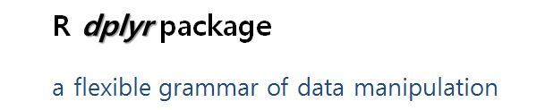

Chapter 4 Data Preprocessing
4.1 들어가는 말
데이터 프레임(dataframe)을 위한 데이터 전처리, 조작(data pre-processing, data manipulation)을 쉽고! 빠르게! 할 수 있도록 해주는 dplyr 패키지에 대해서 알아보겠습니다.
R help에 검색해보면 dplyr 패키지를 아래와 같이 소개하고 있다.
dplyr은 유연한 데이터 조작의 문법을 제공합니다. 이것은plyr의 차기작으로서, 데이터 프레임을 집중적으로 다루는 툴이다
dplyrprovides a flexible grammar of data manipulation. It’s the next iteration ofplyr, focused on tools for working with data frames (hence the d in the name)
데이터 조작을 위한 문법으로 체계화를 해서 한번 배워놓으면 쉽다는 점과 더불어, C언어로 만들어서 매우 빠르다는 점도 dplyr 패키지의 크나큰 장점 중의 하나이다.

그래프/시각화를 문법으로 승화시켜서 체계를 잡아놓은 “ggplot2” 패키지 ( “ggplot is an implementation of the grammer of Graphics in R”)가 있다. 이 ggplot2를 만든 그 유명한 Hadley Wickham 이 dplyr 패키지도 만들었다.
아래에 소개한 것처럼, https://www.r-bloggers.com/ 에 소개되어 있는 Hadley 의 인터뷰를 보면, 기존 통계학에서는 데이터 전처리(Data munging and manipulation)를 “내 일이 아니야”라고 무시했었다고 한다. 그런데 Hadley Wickham이 보기에는 ’모델링’과 ’시각화’로 부터 통찰을 끄집에 내는데 있어서 데이터 조작, 전처리가 매우 중요하고 또 어려운 영역이라고 보았고, Hadley가 직접 나서서 이를 도와줄 수 있는 R packages를 만들었다는 것이다.
“Hadley Wickham on why he created all those R packages”
July 27, 2015 By David Smith
“There are definitely some academic statisticians who just don’t understand why what I do is statistics, but basically I think they are all wrong . What I do is fundamentally statistics. The fact that data science exists as a field is a colossal failure of statistics.
To me, that is what statistics is all about. It is gaining insight from data using modelling and visualization. Data munging and manipulation is hard and statistics has just said that’s not our domain.”

* source : https://www.r-bloggers.com/hadley-wickham-on-why-he-created-all-those-r-packages/
Hadley Wickham의 Github repository 주소는 https://github.com/hadley?tab=repositories 이다.
여기 가보면 엄청나게 많은 R 패키지들에 입이 쩍 벌어진다.
만약에 노벨상에 R community에 기여한 공로를 치하하는 상으로 ’노벨 R 상’이 있다면 Hadley Wickham이 그 첫번째 수상자가 된다고 해도 전혀 이상할게 없을 정도로 정말 R의 확산에 지대한 공헌을 한 것이다.
ggplot2가 시각화/그래프에 관한한 우리를 실망시키지 않았듯이, dplyr 또한 데이터 전처리에 관한한 coverage의 방대함과 문법의 명료함이 우리를 매료시킬 것이라고 생각하며, 하나씩 예를 들어 설명 알아보기로 한다.
아래의 설명은 browseVignettes(package = "dplyr") 치면 팝업으로 나오는 “Introduction to dplyr” HTML 페이지를 참조하였습니다.
4.1.1 데이터 전처리란?
데이터 전처리란 작업할 raw data를 구성하는 관측치와 변수들을 제거, 수정 혹은 추가하여 최종적으로 분석에 사용할 Data Set을 만드는 과정을 말한다.
예를 몇 가지 들자면 다음과 같다.
성별(sex)을0,1로 기입해 놓은 경우 보기 좋게male,female로변경.- 가구 회사에서 의자와 책상을 만들기 위해서 신장과 체중만 있으면 되는 경우, 그 외에 불필요한 변수들(주거지, 최종 학력 등)을
제거하는 것. - 학생들의 교육 성취도 조사를 하려는데 1년치 자료만 있는 경우 과거 기록도
추가하는 경우
4.1.2 왜 dplyr 패키지 인가?
dplyr 패키지의 가장 큰 장점은 %>%(파이프, Pipe) 연산자라고 할 수 있다.
전처리 외에도 파이프 연산자는 가독성을 높여 준다.
수학적으로 말하자면 합성함수 o(circle)와 유사한 기능을 한다.
다만 둘의 차이점은 합성함수는 (f o g)(x) == f(g(x)) 처럼 뒤에서부터 앞의 순서로 계산하지만, dplyr 의 파이프 연산자는 왼쪽에서 오른쪽 순서로 진행된다.
DataFrame%>%function1()%>%function2()
4.2 dplyr 패키지에 있는 함수들
예제로 사용할 데이터는 MASS 패키지에 들어있는 Cars93 데이터프레임입니다.
원래는 93개의 자동차 관측치에 27개의 변수를 가지고 있는데, 예시들기 편하도록 앞에서부터 변수 8개만 선택해서 사용하겠다. (Cars93_1 dataframe)
4.2.1 패키지 설치
library(dplyr)
library(MASS)4.2.2 예제 데이터 확인
head(MASS::Cars93)## Manufacturer Model Type Min.Price Price Max.Price MPG.city MPG.highway
## 1 Acura Integra Small 12.9 15.9 18.8 25 31
## 2 Acura Legend Midsize 29.2 33.9 38.7 18 25
## 3 Audi 90 Compact 25.9 29.1 32.3 20 26
## 4 Audi 100 Midsize 30.8 37.7 44.6 19 26
## 5 BMW 535i Midsize 23.7 30.0 36.2 22 30
## 6 Buick Century Midsize 14.2 15.7 17.3 22 31
## AirBags DriveTrain Cylinders EngineSize Horsepower RPM
## 1 None Front 4 1.8 140 6300
## 2 Driver & Passenger Front 6 3.2 200 5500
## 3 Driver only Front 6 2.8 172 5500
## 4 Driver & Passenger Front 6 2.8 172 5500
## 5 Driver only Rear 4 3.5 208 5700
## 6 Driver only Front 4 2.2 110 5200
## Rev.per.mile Man.trans.avail Fuel.tank.capacity Passengers Length Wheelbase
## 1 2890 Yes 13.2 5 177 102
## 2 2335 Yes 18.0 5 195 115
## 3 2280 Yes 16.9 5 180 102
## 4 2535 Yes 21.1 6 193 106
## 5 2545 Yes 21.1 4 186 109
## 6 2565 No 16.4 6 189 105
## Width Turn.circle Rear.seat.room Luggage.room Weight Origin Make
## 1 68 37 26.5 11 2705 non-USA Acura Integra
## 2 71 38 30.0 15 3560 non-USA Acura Legend
## 3 67 37 28.0 14 3375 non-USA Audi 90
## 4 70 37 31.0 17 3405 non-USA Audi 100
## 5 69 39 27.0 13 3640 non-USA BMW 535i
## 6 69 41 28.0 16 2880 USA Buick Century- 관측치 53,940개, 변수 10개로 이루어진 데이터임을 알 수 있다.
이 외에도 데이터를 확인하는 다양한 함수들은 다음과 같은 것들이 있다.
# Cars93 요약정보 확인
summary(Cars93)## Manufacturer Model Type Min.Price Price
## Chevrolet: 8 100 : 1 Compact:16 Min. : 6.70 Min. : 7.40
## Ford : 8 190E : 1 Large :11 1st Qu.:10.80 1st Qu.:12.20
## Dodge : 6 240 : 1 Midsize:22 Median :14.70 Median :17.70
## Mazda : 5 300E : 1 Small :21 Mean :17.13 Mean :19.51
## Pontiac : 5 323 : 1 Sporty :14 3rd Qu.:20.30 3rd Qu.:23.30
## Buick : 4 535i : 1 Van : 9 Max. :45.40 Max. :61.90
## (Other) :57 (Other):87
## Max.Price MPG.city MPG.highway AirBags
## Min. : 7.9 Min. :15.00 Min. :20.00 Driver & Passenger:16
## 1st Qu.:14.7 1st Qu.:18.00 1st Qu.:26.00 Driver only :43
## Median :19.6 Median :21.00 Median :28.00 None :34
## Mean :21.9 Mean :22.37 Mean :29.09
## 3rd Qu.:25.3 3rd Qu.:25.00 3rd Qu.:31.00
## Max. :80.0 Max. :46.00 Max. :50.00
##
## DriveTrain Cylinders EngineSize Horsepower RPM
## 4WD :10 3 : 3 Min. :1.000 Min. : 55.0 Min. :3800
## Front:67 4 :49 1st Qu.:1.800 1st Qu.:103.0 1st Qu.:4800
## Rear :16 5 : 2 Median :2.400 Median :140.0 Median :5200
## 6 :31 Mean :2.668 Mean :143.8 Mean :5281
## 8 : 7 3rd Qu.:3.300 3rd Qu.:170.0 3rd Qu.:5750
## rotary: 1 Max. :5.700 Max. :300.0 Max. :6500
##
## Rev.per.mile Man.trans.avail Fuel.tank.capacity Passengers
## Min. :1320 No :32 Min. : 9.20 Min. :2.000
## 1st Qu.:1985 Yes:61 1st Qu.:14.50 1st Qu.:4.000
## Median :2340 Median :16.40 Median :5.000
## Mean :2332 Mean :16.66 Mean :5.086
## 3rd Qu.:2565 3rd Qu.:18.80 3rd Qu.:6.000
## Max. :3755 Max. :27.00 Max. :8.000
##
## Length Wheelbase Width Turn.circle
## Min. :141.0 Min. : 90.0 Min. :60.00 Min. :32.00
## 1st Qu.:174.0 1st Qu.: 98.0 1st Qu.:67.00 1st Qu.:37.00
## Median :183.0 Median :103.0 Median :69.00 Median :39.00
## Mean :183.2 Mean :103.9 Mean :69.38 Mean :38.96
## 3rd Qu.:192.0 3rd Qu.:110.0 3rd Qu.:72.00 3rd Qu.:41.00
## Max. :219.0 Max. :119.0 Max. :78.00 Max. :45.00
##
## Rear.seat.room Luggage.room Weight Origin Make
## Min. :19.00 Min. : 6.00 Min. :1695 USA :48 Acura Integra: 1
## 1st Qu.:26.00 1st Qu.:12.00 1st Qu.:2620 non-USA:45 Acura Legend : 1
## Median :27.50 Median :14.00 Median :3040 Audi 100 : 1
## Mean :27.83 Mean :13.89 Mean :3073 Audi 90 : 1
## 3rd Qu.:30.00 3rd Qu.:15.00 3rd Qu.:3525 BMW 535i : 1
## Max. :36.00 Max. :22.00 Max. :4105 Buick Century: 1
## NA's :2 NA's :11 (Other) :87DT::datatable(Cars93)str(Cars93)## 'data.frame': 93 obs. of 27 variables:
## $ Manufacturer : Factor w/ 32 levels "Acura","Audi",..: 1 1 2 2 3 4 4 4 4 5 ...
## $ Model : Factor w/ 93 levels "100","190E","240",..: 49 56 9 1 6 24 54 74 73 35 ...
## $ Type : Factor w/ 6 levels "Compact","Large",..: 4 3 1 3 3 3 2 2 3 2 ...
## $ Min.Price : num 12.9 29.2 25.9 30.8 23.7 14.2 19.9 22.6 26.3 33 ...
## $ Price : num 15.9 33.9 29.1 37.7 30 15.7 20.8 23.7 26.3 34.7 ...
## $ Max.Price : num 18.8 38.7 32.3 44.6 36.2 17.3 21.7 24.9 26.3 36.3 ...
## $ MPG.city : int 25 18 20 19 22 22 19 16 19 16 ...
## $ MPG.highway : int 31 25 26 26 30 31 28 25 27 25 ...
## $ AirBags : Factor w/ 3 levels "Driver & Passenger",..: 3 1 2 1 2 2 2 2 2 2 ...
## $ DriveTrain : Factor w/ 3 levels "4WD","Front",..: 2 2 2 2 3 2 2 3 2 2 ...
## $ Cylinders : Factor w/ 6 levels "3","4","5","6",..: 2 4 4 4 2 2 4 4 4 5 ...
## $ EngineSize : num 1.8 3.2 2.8 2.8 3.5 2.2 3.8 5.7 3.8 4.9 ...
## $ Horsepower : int 140 200 172 172 208 110 170 180 170 200 ...
## $ RPM : int 6300 5500 5500 5500 5700 5200 4800 4000 4800 4100 ...
## $ Rev.per.mile : int 2890 2335 2280 2535 2545 2565 1570 1320 1690 1510 ...
## $ Man.trans.avail : Factor w/ 2 levels "No","Yes": 2 2 2 2 2 1 1 1 1 1 ...
## $ Fuel.tank.capacity: num 13.2 18 16.9 21.1 21.1 16.4 18 23 18.8 18 ...
## $ Passengers : int 5 5 5 6 4 6 6 6 5 6 ...
## $ Length : int 177 195 180 193 186 189 200 216 198 206 ...
## $ Wheelbase : int 102 115 102 106 109 105 111 116 108 114 ...
## $ Width : int 68 71 67 70 69 69 74 78 73 73 ...
## $ Turn.circle : int 37 38 37 37 39 41 42 45 41 43 ...
## $ Rear.seat.room : num 26.5 30 28 31 27 28 30.5 30.5 26.5 35 ...
## $ Luggage.room : int 11 15 14 17 13 16 17 21 14 18 ...
## $ Weight : int 2705 3560 3375 3405 3640 2880 3470 4105 3495 3620 ...
## $ Origin : Factor w/ 2 levels "USA","non-USA": 2 2 2 2 2 1 1 1 1 1 ...
## $ Make : Factor w/ 93 levels "Acura Integra",..: 1 2 4 3 5 6 7 9 8 10 ...dplyr::glimpse(Cars93)## Rows: 93
## Columns: 27
## $ Manufacturer <fct> Acura, Acura, Audi, Audi, BMW, Buick, Buick, Bui...
## $ Model <fct> Integra, Legend, 90, 100, 535i, Century, LeSabre...
## $ Type <fct> Small, Midsize, Compact, Midsize, Midsize, Midsi...
## $ Min.Price <dbl> 12.9, 29.2, 25.9, 30.8, 23.7, 14.2, 19.9, 22.6, ...
## $ Price <dbl> 15.9, 33.9, 29.1, 37.7, 30.0, 15.7, 20.8, 23.7, ...
## $ Max.Price <dbl> 18.8, 38.7, 32.3, 44.6, 36.2, 17.3, 21.7, 24.9, ...
## $ MPG.city <int> 25, 18, 20, 19, 22, 22, 19, 16, 19, 16, 16, 25, ...
## $ MPG.highway <int> 31, 25, 26, 26, 30, 31, 28, 25, 27, 25, 25, 36, ...
## $ AirBags <fct> None, Driver & Passenger, Driver only, Driver & ...
## $ DriveTrain <fct> Front, Front, Front, Front, Rear, Front, Front, ...
## $ Cylinders <fct> 4, 6, 6, 6, 4, 4, 6, 6, 6, 8, 8, 4, 4, 6, 4, 6, ...
## $ EngineSize <dbl> 1.8, 3.2, 2.8, 2.8, 3.5, 2.2, 3.8, 5.7, 3.8, 4.9...
## $ Horsepower <int> 140, 200, 172, 172, 208, 110, 170, 180, 170, 200...
## $ RPM <int> 6300, 5500, 5500, 5500, 5700, 5200, 4800, 4000, ...
## $ Rev.per.mile <int> 2890, 2335, 2280, 2535, 2545, 2565, 1570, 1320, ...
## $ Man.trans.avail <fct> Yes, Yes, Yes, Yes, Yes, No, No, No, No, No, No,...
## $ Fuel.tank.capacity <dbl> 13.2, 18.0, 16.9, 21.1, 21.1, 16.4, 18.0, 23.0, ...
## $ Passengers <int> 5, 5, 5, 6, 4, 6, 6, 6, 5, 6, 5, 5, 5, 4, 6, 7, ...
## $ Length <int> 177, 195, 180, 193, 186, 189, 200, 216, 198, 206...
## $ Wheelbase <int> 102, 115, 102, 106, 109, 105, 111, 116, 108, 114...
## $ Width <int> 68, 71, 67, 70, 69, 69, 74, 78, 73, 73, 74, 66, ...
## $ Turn.circle <int> 37, 38, 37, 37, 39, 41, 42, 45, 41, 43, 44, 38, ...
## $ Rear.seat.room <dbl> 26.5, 30.0, 28.0, 31.0, 27.0, 28.0, 30.5, 30.5, ...
## $ Luggage.room <int> 11, 15, 14, 17, 13, 16, 17, 21, 14, 18, 14, 13, ...
## $ Weight <int> 2705, 3560, 3375, 3405, 3640, 2880, 3470, 4105, ...
## $ Origin <fct> non-USA, non-USA, non-USA, non-USA, non-USA, USA...
## $ Make <fct> Acura Integra, Acura Legend, Audi 90, Audi 100, ...# subset Cars93
Cars93_1 <- Cars93[, 1:8]
str(Cars93_1)## 'data.frame': 93 obs. of 8 variables:
## $ Manufacturer: Factor w/ 32 levels "Acura","Audi",..: 1 1 2 2 3 4 4 4 4 5 ...
## $ Model : Factor w/ 93 levels "100","190E","240",..: 49 56 9 1 6 24 54 74 73 35 ...
## $ Type : Factor w/ 6 levels "Compact","Large",..: 4 3 1 3 3 3 2 2 3 2 ...
## $ Min.Price : num 12.9 29.2 25.9 30.8 23.7 14.2 19.9 22.6 26.3 33 ...
## $ Price : num 15.9 33.9 29.1 37.7 30 15.7 20.8 23.7 26.3 34.7 ...
## $ Max.Price : num 18.8 38.7 32.3 44.6 36.2 17.3 21.7 24.9 26.3 36.3 ...
## $ MPG.city : int 25 18 20 19 22 22 19 16 19 16 ...
## $ MPG.highway : int 31 25 26 26 30 31 28 25 27 25 ...Cars93_1 데이터 프레임에 대하여 str(Cars93_1)으로 데이터 구조를 확인해 본다.
컬럼(변수) 갯수, 컬럼(변수) 명, 관찰치 개수, 관찰치 미리보기 등을 확인해 보면 다음과 같다.
- 데이터 구조 :
'data.frame' : - 컬럼(변수) 갯수 :
8 variables - 컬럼(변수) 명 :
$ Manufacturer,$ Model,$ Type,$ Min.Price,Price,Max.Price,MPG.City,MPG.highway등 8개 컬럼(변수)의 이름 - 관찰치 개수 :
93 obs. - 관찰치 미리보기 : 각 컬럼별 관찰치의 데이터 타입과 실제 데이터를 보여준다.
$ Manufacturer: Factor w/ 32 levels "Acura","Audi",..: 1 1 2 2 3 4 4 4 4 5 ...$ Model : Factor w/ 93 levels "100","190E","240",..: 49 56 9 1 6 24 54 74 73 35 ...$ Type : Factor w/ 6 levels "Compact","Large",..: 4 3 1 3 3 3 2 2 3 2 ...$ Min.Price : num 12.9 29.2 25.9 30.8 23.7 14.2 19.9 22.6 26.3 33 ...$ Price : num 15.9 33.9 29.1 37.7 30 15.7 20.8 23.7 26.3 34.7 ...$ Max.Price : num 18.8 38.7 32.3 44.6 36.2 17.3 21.7 24.9 26.3 36.3 ...$ MPG.city : int 25 18 20 19 22 22 19 16 19 16 ...$ MPG.highway : int 31 25 26 26 30 31 28 25 27 25 ...
실제 데이터(관찰치)의 내용은 View(Cars93_1)로 확인할 수 있다.
View(Cars93_1)- 8개의 컬럼(변수)
- 93개의 행(관찰치)
4.2.3 dplyr 패키지의 주요 함수 목록
단일 테이블을 대상으로 하는 dplyr 패키지의 함수들(Single table verbs)을 표로 정리해보면 아래와 같습니다.
| dplyr verbs | description | similar {package} function |
|---|---|---|
| filter() | Filter rows with condition | {base} subset |
| slice() | Filter rows with position | {base} subset |
| arrange() | Re-order or arrange rows | {base} order |
| select() | Select columns | {base} subset |
| select(df, starts_with()) | Select columns that start with a prefix | |
| select(df, ends_with()) | Select columns that end with a prefix | |
| select(df, contains()) | Select columns that contain a character string | |
| select(df, matchs()) | Select columns that match a regular expression | |
| select(df, one_of()) | Select columns that are from a group of names | |
| select(df, num_range()) | Select columns from num_range a to n with a prefix | |
| rename() | Rename column name | {reshape} rename |
| distinct() | Extract distinct(unique) rows | {base} unique |
| sample_n() | Random sample rows for a fixed number | {base} sample |
| sample_frac() | Random sample rows for a fixed fraction | {base} sample |
| mutate() | Create(add) new columns. mutate() allows you to refer to columns that you’ve just created. | {base} transform |
| transmute() | Create(add) new columns. transmute() only keeps the new columns. | {base} transform |
| summarise() | Summarise values | {base} summary |
4.3 데이터 프레임의 컬럼 선택: select()
4.3.1 select() 함수의 기본 형식
select(dataframe, VAR1, VAR2, ...)
- dataframe : 데이터 세트
- VAR1, VAR2 : 선택하고자 하는 컬럼 이름 기입
Cars93_1 데이터 세트로부터 제조사명(Manufacturer), 최대가격(Max.Price), 고속도로연비(MPG.highway) 3개 변수(칼럼)를 선택해 보자.
# select() : Select columns by name
# select(Cars93_1, Manufacturer, Max.Price, MPG.highway)# 또는
# Cars93_1 %>%
# select(Manufacturer, Max.Price, MPG.highway)- 위의 스크립트를 실행하면 다음과 같은 에러메시지가 나온다.
Error in select(Cars93_1, Manufacturer, Max.Price, MPG.highway) :
사용되지 않은 인자 (Manufacturer, Max.Price, MPG.highway)- 이는
dplyr패키지의select()함수와MASS패키지의select()함수가 충돌하기 때문이다.
이러한 패키지 간의 충돌을 방지하기 위한 해결 방법은 다음과 같다.
- (방법 1)
dplyr::select():select()함수에 명시적으로dplyr패키지 명을 지정하는 방법
a1 <- dplyr::select(Cars93_1, Manufacturer, Max.Price, MPG.highway)
head(a1)## Manufacturer Max.Price MPG.highway
## 1 Acura 18.8 31
## 2 Acura 38.7 25
## 3 Audi 32.3 26
## 4 Audi 44.6 26
## 5 BMW 36.2 30
## 6 Buick 17.3 31- (방법 2)
select <- dplyr::select:select()함수가dplyr패키지의select()함수임을 명시적으로 지정
select <- dplyr::select
a2 <- select(Cars93_1, Manufacturer, Max.Price, MPG.highway)
head(a2)## Manufacturer Max.Price MPG.highway
## 1 Acura 18.8 31
## 2 Acura 38.7 25
## 3 Audi 32.3 26
## 4 Audi 44.6 26
## 5 BMW 36.2 30
## 6 Buick 17.3 31 # 또는
a3 <- Cars93_1 %>%
select(Manufacturer, Max.Price, MPG.highway)
head(a3)## Manufacturer Max.Price MPG.highway
## 1 Acura 18.8 31
## 2 Acura 38.7 25
## 3 Audi 32.3 26
## 4 Audi 44.6 26
## 5 BMW 36.2 30
## 6 Buick 17.3 31- (방법 3)
MASS패키지를 먼저 로딩하고, 나중에dplyr패키지를 로딩하기
library(MASS)
library(dplyr) # dplyr loading after MASS
a4 <- select(Cars93, Manufacturer, Max.Price, MPG.highway)
head(a4)## Manufacturer Max.Price MPG.highway
## 1 Acura 18.8 31
## 2 Acura 38.7 25
## 3 Audi 32.3 26
## 4 Audi 44.6 26
## 5 BMW 36.2 30
## 6 Buick 17.3 31이제 정상적으로 3개의 컬럼이 선택되어 출력이 된다.
4.3.2 a번째 부터 n번째의 연속적 컬럼 선택
select(dataframe, VAR_a:VAR_n, ...)
dataframe : 데이터 세트
VAR_a:VAR_n : a번째부터 n번째 변수
서로 인접한 연속된 변수들을 선택하고자 할 때는 예시처럼 ‘:’를 사용한다.
Cars93_1 데이터 세트에서 1번째에 위치한 제조사(Manufacturer) ~ 5번째에 위치한 가격(Price)까지 연속적으로 5개의 변수들을 선택해 보자. (컬럼의 이름으로)
a5 <- select(Cars93_1, Manufacturer:Price)
head(a5)## Manufacturer Model Type Min.Price Price
## 1 Acura Integra Small 12.9 15.9
## 2 Acura Legend Midsize 29.2 33.9
## 3 Audi 90 Compact 25.9 29.1
## 4 Audi 100 Midsize 30.8 37.7
## 5 BMW 535i Midsize 23.7 30.0
## 6 Buick Century Midsize 14.2 15.7# 또는
a6 <- Cars93_1 %>%
select(Manufacturer:Price)
head(a6)## Manufacturer Model Type Min.Price Price
## 1 Acura Integra Small 12.9 15.9
## 2 Acura Legend Midsize 29.2 33.9
## 3 Audi 90 Compact 25.9 29.1
## 4 Audi 100 Midsize 30.8 37.7
## 5 BMW 535i Midsize 23.7 30.0
## 6 Buick Century Midsize 14.2 15.7- 위의 결과로
Manufacturer,Model,Type,Min.Price, 그리고Price등의 5개의 컬럼이 선택된다.
아래와 같이 연속적인 컬럼의 위치를 알고 있으면 (가령 a부터 n번째 위치) ‘a:n’처럼 숫자를 직접 입력해주면 바로 위의 결과와 동일한 결과를 얻을 수 있다.
a7 <- select(Cars93_1, 1:5)
head(a7)## Manufacturer Model Type Min.Price Price
## 1 Acura Integra Small 12.9 15.9
## 2 Acura Legend Midsize 29.2 33.9
## 3 Audi 90 Compact 25.9 29.1
## 4 Audi 100 Midsize 30.8 37.7
## 5 BMW 535i Midsize 23.7 30.0
## 6 Buick Century Midsize 14.2 15.7# 또는
a8 <- Cars93_1 %>%
select(1:5)
head(a8)## Manufacturer Model Type Min.Price Price
## 1 Acura Integra Small 12.9 15.9
## 2 Acura Legend Midsize 29.2 33.9
## 3 Audi 90 Compact 25.9 29.1
## 4 Audi 100 Midsize 30.8 37.7
## 5 BMW 535i Midsize 23.7 30.0
## 6 Buick Century Midsize 14.2 15.7참고로, dplyr 패키지의 select() 함수는 base패키지에 내장되어 있는 subset(dataframe, select=...) 함수와 기능이 같다. 아래의 subset() 함수의 결과와 비교해 보면, 그 결과가 위와 같다.
a9 <- subset(Cars93_1, select = c(Manufacturer:Price))
head(a9)## Manufacturer Model Type Min.Price Price
## 1 Acura Integra Small 12.9 15.9
## 2 Acura Legend Midsize 29.2 33.9
## 3 Audi 90 Compact 25.9 29.1
## 4 Audi 100 Midsize 30.8 37.7
## 5 BMW 535i Midsize 23.7 30.0
## 6 Buick Century Midsize 14.2 15.7# 또는
a10 <- Cars93_1 %>%
subset(select = c(Manufacturer:Price))
head(a10)## Manufacturer Model Type Min.Price Price
## 1 Acura Integra Small 12.9 15.9
## 2 Acura Legend Midsize 29.2 33.9
## 3 Audi 90 Compact 25.9 29.1
## 4 Audi 100 Midsize 30.8 37.7
## 5 BMW 535i Midsize 23.7 30.0
## 6 Buick Century Midsize 14.2 15.7a11 <- subset(Cars93_1, select = c(1:5))
head(a11)## Manufacturer Model Type Min.Price Price
## 1 Acura Integra Small 12.9 15.9
## 2 Acura Legend Midsize 29.2 33.9
## 3 Audi 90 Compact 25.9 29.1
## 4 Audi 100 Midsize 30.8 37.7
## 5 BMW 535i Midsize 23.7 30.0
## 6 Buick Century Midsize 14.2 15.7# 또는
a12 <- Cars93_1 %>%
subset(select = c(1:5))
head(a12)## Manufacturer Model Type Min.Price Price
## 1 Acura Integra Small 12.9 15.9
## 2 Acura Legend Midsize 29.2 33.9
## 3 Audi 90 Compact 25.9 29.1
## 4 Audi 100 Midsize 30.8 37.7
## 5 BMW 535i Midsize 23.7 30.0
## 6 Buick Century Midsize 14.2 15.74.3.3 a번째 부터 n번째의 연속적 컬럼을 제외한 선택
select(dataframe, -(VAR_a:VAR_n, …))
dataframe : 데이터 세트
VAR_a:VAR_n : a번째부터 n번째 변수
컬럼 이름 앞에 ‘-’(minus) 부호를 사용하면, 그 컬럼은 제외하고 선택하게 된다.
# select(dataframe, -var1, -var2, ...) : to drop variables
a13 <- select(Cars93_1, -(Manufacturer:Price)); head(a13)## Max.Price MPG.city MPG.highway
## 1 18.8 25 31
## 2 38.7 18 25
## 3 32.3 20 26
## 4 44.6 19 26
## 5 36.2 22 30
## 6 17.3 22 31# 또는
a14 <- select(Cars93_1, -(1:5)); head(a14)## Max.Price MPG.city MPG.highway
## 1 18.8 25 31
## 2 38.7 18 25
## 3 32.3 20 26
## 4 44.6 19 26
## 5 36.2 22 30
## 6 17.3 22 31# 또는
a15 <- Cars93_1 %>%
select(-(Manufacturer:Price))
head(a15)## Max.Price MPG.city MPG.highway
## 1 18.8 25 31
## 2 38.7 18 25
## 3 32.3 20 26
## 4 44.6 19 26
## 5 36.2 22 30
## 6 17.3 22 31# 또는
a16 <- Cars93_1 %>%
select(-(1:5))
head(a16) ## Max.Price MPG.city MPG.highway
## 1 18.8 25 31
## 2 38.7 18 25
## 3 32.3 20 26
## 4 44.6 19 26
## 5 36.2 22 30
## 6 17.3 22 314.3.4 컬럼 이름의 ’앞 부분’을 지정하여 선택
select(dataframe, starts_with(“xx_name”))
- dataframe : 데이터 세트
- starts_with(“xx_name”) :컬럼 이름이 “
xx_name”으로 시작하는 모든 컬럼 선택
select() 함수의 인수로 starts_with() 를 사용하여 “xx_name”으로 시작하는 모든 컬럼을 선택할 수 있다.
Cars93_1 데이터 프레임에서 “MPG”로 시작하는 모든 변수를 선택해 보자.
# select(dataframe, starts_with("xx_name"))
# : select all variables, starting with a "xx_name" prefix
a17 <- select(Cars93_1, starts_with("MPG"))
head(a17)## MPG.city MPG.highway
## 1 25 31
## 2 18 25
## 3 20 26
## 4 19 26
## 5 22 30
## 6 22 31# 또는
a18 <- Cars93_1 %>%
select(starts_with("MPG"))
head(a18)## MPG.city MPG.highway
## 1 25 31
## 2 18 25
## 3 20 26
## 4 19 26
## 5 22 30
## 6 22 31- “
MPG”로 시작하는 컬럼으로 “MPG.city”(도시 연비), “MPG.highway”(고속도로 연비) 두 개의 컬럼이 출력된다.
4.3.5 컬럼 이름의 ’끝 부분’을 지정하여 선택
select(dataframe, ends_with(“xx_name”))
- dataframe : 데이터 세트
- ends_with(“xx_name”) :컬럼 이름이 “
xx_name”으로 끝나는 모든 컬럼 선택
starts_with가() 있으면 ends_with()도 있다. “xx_name”으로 끝나는 모든 컬럼을 선택하고 싶다면 select() 함수 안에 인수로 ends_with() 를 추가해주면 된다.
Cars93_1 데이터 프레임에서 “Price”로 끝나는 모든 변수를 선택해 보자
# select(dataframe, ends_with("xx_name"))
# : select all variables, ending with a "xx_name" prefix
a19 <- select(Cars93_1, ends_with("Price"))
head(a19)## Min.Price Price Max.Price
## 1 12.9 15.9 18.8
## 2 29.2 33.9 38.7
## 3 25.9 29.1 32.3
## 4 30.8 37.7 44.6
## 5 23.7 30.0 36.2
## 6 14.2 15.7 17.3# 또는
a20 <- Cars93_1 %>%
select(ends_with("Price"))
head(a20)## Min.Price Price Max.Price
## 1 12.9 15.9 18.8
## 2 29.2 33.9 38.7
## 3 25.9 29.1 32.3
## 4 30.8 37.7 44.6
## 5 23.7 30.0 36.2
## 6 14.2 15.7 17.3- “
Price”로 끝나는 컬럼이 “Min.Price,” “Price,” “Max.Price” 등 3개가 있음을 알 수 있다.
4.3.6 컬럼 이름의 일부를 포함하는 컬럼 선택
select(dataframe, contains(“xx_name”))
- dataframe : 데이터 세트
- contains(“xx_name”) : 컬럼 이름이 “xx_name”을 포함하는 모든 컬럼 선택
select() 함수에 contains() 인수를 사용하면 특정 문자열을 포함하는 모든 컬럼을 선택할 수 있다.
이때 “xx_name”은 대소문자를 구분하지 않는다.
Cars93_1 데이터 프레임에 있는 컬럼들 중에서 “P”를 포함하는 모든 컬럼을 선택해 보자.
# select(dataframe, contains("xx_string"))
# : select all variables which contains a "xx_string" literal string
a21 <- select(Cars93_1, contains("P"))
head(a21)## Type Min.Price Price Max.Price MPG.city MPG.highway
## 1 Small 12.9 15.9 18.8 25 31
## 2 Midsize 29.2 33.9 38.7 18 25
## 3 Compact 25.9 29.1 32.3 20 26
## 4 Midsize 30.8 37.7 44.6 19 26
## 5 Midsize 23.7 30.0 36.2 22 30
## 6 Midsize 14.2 15.7 17.3 22 31# 또는
a22 <- Cars93_1 %>%
select(contains("P"))
head(a22)## Type Min.Price Price Max.Price MPG.city MPG.highway
## 1 Small 12.9 15.9 18.8 25 31
## 2 Midsize 29.2 33.9 38.7 18 25
## 3 Compact 25.9 29.1 32.3 20 26
## 4 Midsize 30.8 37.7 44.6 19 26
## 5 Midsize 23.7 30.0 36.2 22 30
## 6 Midsize 14.2 15.7 17.3 22 31- “
P”를 포함하는 컬럼으로 “Type”(소문자 ‘p’ 포함, 대소문자 구분 안함), “Min.Price,” “Price,” “Max.Price,” “MPG.city,” “MPG.highway” 등 총 6개의 컬럼이 있다.
4.3.7 정규 표현식과 일치하는 문자열을 포함하는 컬럼 선택
select(dataframe, matches(“.xx_string.”))
dataframe : 데이터 세트
matches(“.xx_string.”) : 정규 표현식과 일치하는 문자열이 포함된 모든 컬럼 선택
여기서도 대소문자는 구분하지 않는다. 정규 표현식(regular expressions)에 대해서는 추후에 학습하기로 한다.
Cars93_1의 데이터 프레임에 있는 컬럼 중 그 이름의 중간에 “P”를 포함하는(정규표현식 - “.P.”) 모든 컬럼을 선택해 보자.
# select(dataframe, matches(".xx_string."))
# : Select columns that match a regular expression
a23 <- select(Cars93_1, matches(".P.")); head(a23)## Type Min.Price Max.Price MPG.city MPG.highway
## 1 Small 12.9 18.8 25 31
## 2 Midsize 29.2 38.7 18 25
## 3 Compact 25.9 32.3 20 26
## 4 Midsize 30.8 44.6 19 26
## 5 Midsize 23.7 36.2 22 30
## 6 Midsize 14.2 17.3 22 31a24 <- select(Cars93_1, matches("P")); head(a24) # exactly the same with contains("P")## Type Min.Price Price Max.Price MPG.city MPG.highway
## 1 Small 12.9 15.9 18.8 25 31
## 2 Midsize 29.2 33.9 38.7 18 25
## 3 Compact 25.9 29.1 32.3 20 26
## 4 Midsize 30.8 37.7 44.6 19 26
## 5 Midsize 23.7 30.0 36.2 22 30
## 6 Midsize 14.2 15.7 17.3 22 31# 또는
a25 <- Cars93_1 %>%
select(matches(".P."))
head(a25)## Type Min.Price Max.Price MPG.city MPG.highway
## 1 Small 12.9 18.8 25 31
## 2 Midsize 29.2 38.7 18 25
## 3 Compact 25.9 32.3 20 26
## 4 Midsize 30.8 44.6 19 26
## 5 Midsize 23.7 36.2 22 30
## 6 Midsize 14.2 17.3 22 31a26 <- Cars93_1 %>%
select(matches("P"))
head(a26)## Type Min.Price Price Max.Price MPG.city MPG.highway
## 1 Small 12.9 15.9 18.8 25 31
## 2 Midsize 29.2 33.9 38.7 18 25
## 3 Compact 25.9 29.1 32.3 20 26
## 4 Midsize 30.8 37.7 44.6 19 26
## 5 Midsize 23.7 30.0 36.2 22 30
## 6 Midsize 14.2 15.7 17.3 22 31위에
match()옵션 안에 첫 예제는 (“.P.”)를, 두번 째 예제는 점이 없이 (“P”)를 사용했다.앞 뒤로 ‘
.’(dot) 을 붙이면 시작과 끝 말고 컬럼명의 중간에 특정 문자열이 포함된 컬럼을 선택하라는 뜻이다.matches(".P.")로 한 경우에는 “P”로 시작하는 “Price” 컬럼이 선택되지 않지만, 그냥matches("P")로 한 경우는 “P”로 시작하는 “Price” 컬럼도 포함되어 있음을 알 수 있다.참고로, ‘
.’(dot) 이 없이matches()를 쓰면contains()와 동일한 결과를 반환합니다.
4.3.8 원하는 컬럼 명의 그룹에 포함된 컬럼 선택
select(dataframe, one_of(vars))
- dataframe : 데이터 세트
- one_of(vars) : 컬럼 이름의 그룹(vars)에 포함된 모든 컬럼 선택
Cars93_1의 데이터 프레임 중에서 “Manufacturer,” “MAX.Price,” “MPG.highway” 등 3개의 컬럼 이름을 포함하는 컬럼 그룹이 있다고 할 때, Cars93_1 데이터 프레임에서 이 컬럼 그룹에 있는 컬럼이 있다면(<- 즉, 있을 수도 있지만 없을 수도 있다는 뜻임!) 모두 선택해 보자.
# select(dataframe, one_of(vars))
# : Select columns that are from a group of names
vars <- c("Manufacturer", "MAX.Price", "MPG.highway")
a27 <- select(Cars93_1, one_of(vars))## Warning: Unknown columns: `MAX.Price`head(a27)## Manufacturer MPG.highway
## 1 Acura 31
## 2 Acura 25
## 3 Audi 26
## 4 Audi 26
## 5 BMW 30
## 6 Buick 31# 또는
vars <- c("Manufacturer", "MAX.Price", "MPG.highway")
a28 <- Cars93_1 %>%
select(one_of(vars))## Warning: Unknown columns: `MAX.Price`head(a28)## Manufacturer MPG.highway
## 1 Acura 31
## 2 Acura 25
## 3 Audi 26
## 4 Audi 26
## 5 BMW 30
## 6 Buick 31위의 결과로 “
MAX.Price”라는 컬럼에 대해서는 “Unknown variables”라고 해서 Warning mesage가 뜬다.Cars93_1에 보면 “Max.Price”라는 컬럼은 있어도 “MAX.Price”라는 컬럼이 없다.이처럼 변수 그룹vars에 나열된 이름 중에서 데이터 프레임에 포함된 컬럼에 대해서는 선택되지만. 해당 컬럼이 없다면 Warning message를 보여준다.
반면에 그냥 select() 함수로 위의 컬럼 그룹을 선택해보면, 아래처럼 “Error: Can’t subset columns that don’t exist. x Column MAX.Price doesn’t exist.” error 메시지만 표시가 된다.
# select(Cars93_1, Manufacturer, MAX.Price, MPG.highway)4.3.9 컬럼 이름의 접두사와 숫자 범위를 조합하여 컬럼 선택
select(dataframe, num_range("V", a:n))
dataframe: 데이터 세트num_range("V", a:n): 접두사(“V”)와 숫자 범위(“a:n”)를 조합하여Va컬럼 부터Vn컬럼까지 선택
변수 이름이 동일하게 특정 접두사로 시작하는 데이터 프레임의 경우 이 기능을 유용하게 사용할 수 있다.
“V1,” “V2,” “V3,” “V4” 등의 4개 변수를 가진 df 데이터 프레임에서 “V2,” “V3” 변수를 선택해 보자. 단, 이때 접두사 “V”와 숫자 범위 2:3 을 조합해서 쓰는 num_range() 옵션을 사용하면 다음과 같다.
# select(df, num_range("V", a:n))
# : Select columns from num_range a to n with a prefix
V1 <- c(rep(1, 10))
V2 <- c(rep(1:2, 5))
V3 <- c(rep(1:5, 2))
V4 <- c(rep(1:10))
df <- data.frame(V1, V2, V3, V4)
df## V1 V2 V3 V4
## 1 1 1 1 1
## 2 1 2 2 2
## 3 1 1 3 3
## 4 1 2 4 4
## 5 1 1 5 5
## 6 1 2 1 6
## 7 1 1 2 7
## 8 1 2 3 8
## 9 1 1 4 9
## 10 1 2 5 10a29 <- select(df, num_range("V", 2:3))
head(a29)## V2 V3
## 1 1 1
## 2 2 2
## 3 1 3
## 4 2 4
## 5 1 5
## 6 2 1# 또는
a30 <- df %>%
select(num_range("V", 2:3))
head(a30)## V2 V3
## 1 1 1
## 2 2 2
## 3 1 3
## 4 2 4
## 5 1 5
## 6 2 14.4 filter() 함수를 이용한 행의 선택
4.4.1 filter() 함수의 기본 형식
filter(dataframe, filter condition 1, filter condition 2, …)
dataframe : 데이터 세트
filter condition : &(AND) 조건으로 행의 부분집합 선택. 조건을 컴마(‘
,’)로 구분
4.4.2 단일 조건에 의한 행의 선택
Cars93_1 데이터 프레임에 차종(Type)별로 보면 Compact 차종이 총 16개 있음을 알 수 있습니다.
# number of cars by `Type`
table(Cars93_1$Type)##
## Compact Large Midsize Small Sporty Van
## 16 11 22 21 14 9# filter() : select a subset of rows in a data frame
filter(Cars93_1, Type == c("Compact"))## Manufacturer Model Type Min.Price Price Max.Price MPG.city
## 1 Audi 90 Compact 25.9 29.1 32.3 20
## 2 Chevrolet Cavalier Compact 8.5 13.4 18.3 25
## 3 Chevrolet Corsica Compact 11.4 11.4 11.4 25
## 4 Chrysler LeBaron Compact 14.5 15.8 17.1 23
## 5 Dodge Spirit Compact 11.9 13.3 14.7 22
## 6 Ford Tempo Compact 10.4 11.3 12.2 22
## 7 Honda Accord Compact 13.8 17.5 21.2 24
## 8 Mazda 626 Compact 14.3 16.5 18.7 26
## 9 Mercedes-Benz 190E Compact 29.0 31.9 34.9 20
## 10 Nissan Altima Compact 13.0 15.7 18.3 24
## 11 Oldsmobile Achieva Compact 13.0 13.5 14.0 24
## 12 Pontiac Sunbird Compact 9.4 11.1 12.8 23
## 13 Saab 900 Compact 20.3 28.7 37.1 20
## 14 Subaru Legacy Compact 16.3 19.5 22.7 23
## 15 Volkswagen Passat Compact 17.6 20.0 22.4 21
## 16 Volvo 240 Compact 21.8 22.7 23.5 21
## MPG.highway
## 1 26
## 2 36
## 3 34
## 4 28
## 5 27
## 6 27
## 7 31
## 8 34
## 9 29
## 10 30
## 11 31
## 12 31
## 13 26
## 14 30
## 15 30
## 16 284.4.3 복수 조건을 AND(,)로 결합한 행의 선택
행을 선택하는 조건이 여러 개이면 동시에 만족해야 하는 경우는 AND 연산에 의한 조건 결합으로 행을 선택한다. 예를 들어, 차종(Type)이 “Compact”이면서(Type == c(“Compact”)) , 최대가격(Max.Price)이 20 백$ 이하이고 (Max.Price <-20), 고속도로 연비(MPG.highway) 가 30 이상 (MPG.highway > 30)인 관측치를 선택해 보자. 이 경우는 3개의 행 선택 조건이 모두 AND로 결합되는 것이다. 이때에는 이들 세 개의 조건식을 컴마(,)로 구분해 주면 된다.
따라서 위의 문제를 dplyr의 filter() 함수를 사용하여 나타내면 다음과 같다. 참고로, subset() 함수의 subset()과 동일한 기능을 한다.
# filter() : select a subset of rows in a data frame
filter(Cars93_1, Type == c("Compact"), Max.Price <= 20, MPG.highway >= 30)## Manufacturer Model Type Min.Price Price Max.Price MPG.city MPG.highway
## 1 Chevrolet Cavalier Compact 8.5 13.4 18.3 25 36
## 2 Chevrolet Corsica Compact 11.4 11.4 11.4 25 34
## 3 Mazda 626 Compact 14.3 16.5 18.7 26 34
## 4 Nissan Altima Compact 13.0 15.7 18.3 24 30
## 5 Oldsmobile Achieva Compact 13.0 13.5 14.0 24 31
## 6 Pontiac Sunbird Compact 9.4 11.1 12.8 23 31# 또는
Cars93_1 %>%
filter(Type == c("Compact"), Max.Price <= 20, MPG.highway >= 30)## Manufacturer Model Type Min.Price Price Max.Price MPG.city MPG.highway
## 1 Chevrolet Cavalier Compact 8.5 13.4 18.3 25 36
## 2 Chevrolet Corsica Compact 11.4 11.4 11.4 25 34
## 3 Mazda 626 Compact 14.3 16.5 18.7 26 34
## 4 Nissan Altima Compact 13.0 15.7 18.3 24 30
## 5 Oldsmobile Achieva Compact 13.0 13.5 14.0 24 31
## 6 Pontiac Sunbird Compact 9.4 11.1 12.8 23 31- 세 개의 조건을 동시에 만족하는 관측치의 갯수는 6개임을 알 수 있다.
4.4.4 복수 조건을 OR(|)로 결합한 행의 선택
filter(dataframe, filter condition 1 | filter condition 2 | …)
dataframe: 데이터 세트filter condition 1: 선택 조건 1|: OR 조건 연산자
OR(또는) 조건으로 부분집합을 선별하려면 |를 사용한다. (subset() 함수와 동일)
Cars93_1 데이터 세트의 차종(Type)이 “Compact”이거나(|: OR), 최대가격(Max.Price)이 20 백$ 이하이거나(|, OR) 고속도로 연비(MPG.highway) 가 30 이상인 관측치 (행)을 선택해 보자. 즉, 3개의 검색 조건 중 하나라도 만족하면 그 행은 선택이 된다. 이때 이들 조건들을 OR 연산자인 |를 사용하여 결합하다.
위의 문제는 dplyr의 filter() 함수를 사용하면 다음과 같이 된다.
# filter(dataframe, condition1 | condition2) : or
filter(Cars93_1, Type == c("Compact") | Max.Price <= 20 | MPG.highway >= 30)## Manufacturer Model Type Min.Price Price Max.Price MPG.city
## 1 Acura Integra Small 12.9 15.9 18.8 25
## 2 Audi 90 Compact 25.9 29.1 32.3 20
## 3 BMW 535i Midsize 23.7 30.0 36.2 22
## 4 Buick Century Midsize 14.2 15.7 17.3 22
## 5 Chevrolet Cavalier Compact 8.5 13.4 18.3 25
## 6 Chevrolet Corsica Compact 11.4 11.4 11.4 25
## 7 Chevrolet Camaro Sporty 13.4 15.1 16.8 19
## 8 Chevrolet Lumina Midsize 13.4 15.9 18.4 21
## 9 Chevrolet Lumina_APV Van 14.7 16.3 18.0 18
## 10 Chevrolet Astro Van 14.7 16.6 18.6 15
## 11 Chevrolet Caprice Large 18.0 18.8 19.6 17
## 12 Chrylser Concorde Large 18.4 18.4 18.4 20
## 13 Chrysler LeBaron Compact 14.5 15.8 17.1 23
## 14 Dodge Colt Small 7.9 9.2 10.6 29
## 15 Dodge Shadow Small 8.4 11.3 14.2 23
## 16 Dodge Spirit Compact 11.9 13.3 14.7 22
## 17 Dodge Dynasty Midsize 14.8 15.6 16.4 21
## 18 Eagle Summit Small 7.9 12.2 16.5 29
## 19 Ford Festiva Small 6.9 7.4 7.9 31
## 20 Ford Escort Small 8.4 10.1 11.9 23
## 21 Ford Tempo Compact 10.4 11.3 12.2 22
## 22 Ford Probe Sporty 12.8 14.0 15.2 24
## 23 Ford Taurus Midsize 15.6 20.2 24.8 21
## 24 Geo Metro Small 6.7 8.4 10.0 46
## 25 Geo Storm Sporty 11.5 12.5 13.5 30
## 26 Honda Prelude Sporty 17.0 19.8 22.7 24
## 27 Honda Civic Small 8.4 12.1 15.8 42
## 28 Honda Accord Compact 13.8 17.5 21.2 24
## 29 Hyundai Excel Small 6.8 8.0 9.2 29
## 30 Hyundai Elantra Small 9.0 10.0 11.0 22
## 31 Hyundai Scoupe Sporty 9.1 10.0 11.0 26
## 32 Hyundai Sonata Midsize 12.4 13.9 15.3 20
## 33 Mazda 323 Small 7.4 8.3 9.1 29
## 34 Mazda Protege Small 10.9 11.6 12.3 28
## 35 Mazda 626 Compact 14.3 16.5 18.7 26
## 36 Mercedes-Benz 190E Compact 29.0 31.9 34.9 20
## 37 Mercury Capri Sporty 13.3 14.1 15.0 23
## 38 Mercury Cougar Midsize 14.9 14.9 14.9 19
## 39 Mitsubishi Mirage Small 7.7 10.3 12.9 29
## 40 Nissan Sentra Small 8.7 11.8 14.9 29
## 41 Nissan Altima Compact 13.0 15.7 18.3 24
## 42 Oldsmobile Achieva Compact 13.0 13.5 14.0 24
## 43 Oldsmobile Cutlass_Ciera Midsize 14.2 16.3 18.4 23
## 44 Oldsmobile Silhouette Van 19.5 19.5 19.5 18
## 45 Plymouth Laser Sporty 11.4 14.4 17.4 23
## 46 Pontiac LeMans Small 8.2 9.0 9.9 31
## 47 Pontiac Sunbird Compact 9.4 11.1 12.8 23
## 48 Saab 900 Compact 20.3 28.7 37.1 20
## 49 Saturn SL Small 9.2 11.1 12.9 28
## 50 Subaru Justy Small 7.3 8.4 9.5 33
## 51 Subaru Loyale Small 10.5 10.9 11.3 25
## 52 Subaru Legacy Compact 16.3 19.5 22.7 23
## 53 Suzuki Swift Small 7.3 8.6 10.0 39
## 54 Toyota Tercel Small 7.8 9.8 11.8 32
## 55 Toyota Celica Sporty 14.2 18.4 22.6 25
## 56 Volkswagen Fox Small 8.7 9.1 9.5 25
## 57 Volkswagen Passat Compact 17.6 20.0 22.4 21
## 58 Volvo 240 Compact 21.8 22.7 23.5 21
## MPG.highway
## 1 31
## 2 26
## 3 30
## 4 31
## 5 36
## 6 34
## 7 28
## 8 29
## 9 23
## 10 20
## 11 26
## 12 28
## 13 28
## 14 33
## 15 29
## 16 27
## 17 27
## 18 33
## 19 33
## 20 30
## 21 27
## 22 30
## 23 30
## 24 50
## 25 36
## 26 31
## 27 46
## 28 31
## 29 33
## 30 29
## 31 34
## 32 27
## 33 37
## 34 36
## 35 34
## 36 29
## 37 26
## 38 26
## 39 33
## 40 33
## 41 30
## 42 31
## 43 31
## 44 23
## 45 30
## 46 41
## 47 31
## 48 26
## 49 38
## 50 37
## 51 30
## 52 30
## 53 43
## 54 37
## 55 32
## 56 33
## 57 30
## 58 28# 또는
Cars93_1 %>%
filter(Type == c("Compact") | Max.Price <= 20 | MPG.highway >= 30)## Manufacturer Model Type Min.Price Price Max.Price MPG.city
## 1 Acura Integra Small 12.9 15.9 18.8 25
## 2 Audi 90 Compact 25.9 29.1 32.3 20
## 3 BMW 535i Midsize 23.7 30.0 36.2 22
## 4 Buick Century Midsize 14.2 15.7 17.3 22
## 5 Chevrolet Cavalier Compact 8.5 13.4 18.3 25
## 6 Chevrolet Corsica Compact 11.4 11.4 11.4 25
## 7 Chevrolet Camaro Sporty 13.4 15.1 16.8 19
## 8 Chevrolet Lumina Midsize 13.4 15.9 18.4 21
## 9 Chevrolet Lumina_APV Van 14.7 16.3 18.0 18
## 10 Chevrolet Astro Van 14.7 16.6 18.6 15
## 11 Chevrolet Caprice Large 18.0 18.8 19.6 17
## 12 Chrylser Concorde Large 18.4 18.4 18.4 20
## 13 Chrysler LeBaron Compact 14.5 15.8 17.1 23
## 14 Dodge Colt Small 7.9 9.2 10.6 29
## 15 Dodge Shadow Small 8.4 11.3 14.2 23
## 16 Dodge Spirit Compact 11.9 13.3 14.7 22
## 17 Dodge Dynasty Midsize 14.8 15.6 16.4 21
## 18 Eagle Summit Small 7.9 12.2 16.5 29
## 19 Ford Festiva Small 6.9 7.4 7.9 31
## 20 Ford Escort Small 8.4 10.1 11.9 23
## 21 Ford Tempo Compact 10.4 11.3 12.2 22
## 22 Ford Probe Sporty 12.8 14.0 15.2 24
## 23 Ford Taurus Midsize 15.6 20.2 24.8 21
## 24 Geo Metro Small 6.7 8.4 10.0 46
## 25 Geo Storm Sporty 11.5 12.5 13.5 30
## 26 Honda Prelude Sporty 17.0 19.8 22.7 24
## 27 Honda Civic Small 8.4 12.1 15.8 42
## 28 Honda Accord Compact 13.8 17.5 21.2 24
## 29 Hyundai Excel Small 6.8 8.0 9.2 29
## 30 Hyundai Elantra Small 9.0 10.0 11.0 22
## 31 Hyundai Scoupe Sporty 9.1 10.0 11.0 26
## 32 Hyundai Sonata Midsize 12.4 13.9 15.3 20
## 33 Mazda 323 Small 7.4 8.3 9.1 29
## 34 Mazda Protege Small 10.9 11.6 12.3 28
## 35 Mazda 626 Compact 14.3 16.5 18.7 26
## 36 Mercedes-Benz 190E Compact 29.0 31.9 34.9 20
## 37 Mercury Capri Sporty 13.3 14.1 15.0 23
## 38 Mercury Cougar Midsize 14.9 14.9 14.9 19
## 39 Mitsubishi Mirage Small 7.7 10.3 12.9 29
## 40 Nissan Sentra Small 8.7 11.8 14.9 29
## 41 Nissan Altima Compact 13.0 15.7 18.3 24
## 42 Oldsmobile Achieva Compact 13.0 13.5 14.0 24
## 43 Oldsmobile Cutlass_Ciera Midsize 14.2 16.3 18.4 23
## 44 Oldsmobile Silhouette Van 19.5 19.5 19.5 18
## 45 Plymouth Laser Sporty 11.4 14.4 17.4 23
## 46 Pontiac LeMans Small 8.2 9.0 9.9 31
## 47 Pontiac Sunbird Compact 9.4 11.1 12.8 23
## 48 Saab 900 Compact 20.3 28.7 37.1 20
## 49 Saturn SL Small 9.2 11.1 12.9 28
## 50 Subaru Justy Small 7.3 8.4 9.5 33
## 51 Subaru Loyale Small 10.5 10.9 11.3 25
## 52 Subaru Legacy Compact 16.3 19.5 22.7 23
## 53 Suzuki Swift Small 7.3 8.6 10.0 39
## 54 Toyota Tercel Small 7.8 9.8 11.8 32
## 55 Toyota Celica Sporty 14.2 18.4 22.6 25
## 56 Volkswagen Fox Small 8.7 9.1 9.5 25
## 57 Volkswagen Passat Compact 17.6 20.0 22.4 21
## 58 Volvo 240 Compact 21.8 22.7 23.5 21
## MPG.highway
## 1 31
## 2 26
## 3 30
## 4 31
## 5 36
## 6 34
## 7 28
## 8 29
## 9 23
## 10 20
## 11 26
## 12 28
## 13 28
## 14 33
## 15 29
## 16 27
## 17 27
## 18 33
## 19 33
## 20 30
## 21 27
## 22 30
## 23 30
## 24 50
## 25 36
## 26 31
## 27 46
## 28 31
## 29 33
## 30 29
## 31 34
## 32 27
## 33 37
## 34 36
## 35 34
## 36 29
## 37 26
## 38 26
## 39 33
## 40 33
## 41 30
## 42 31
## 43 31
## 44 23
## 45 30
## 46 41
## 47 31
## 48 26
## 49 38
## 50 37
## 51 30
## 52 30
## 53 43
## 54 37
## 55 32
## 56 33
## 57 30
## 58 28- 위의 3가지 조건을 OR로 만족시키는 관측치의 갯수는 58개 임을 알 수 있다.
4.4.5 행의 위치를 지정해서 행의 데이터 부분집합 선택
slice(dataframe, from, to)
dataframe: 데이터 세트
from: 시작 위치
to: 마지막 위치
filter()가 조건에 의한 행의 선택이었다면, 위치(position)를 사용한 행의 선택을 위해서는 slice() 함수를 사용한다.
Cars93_1 데이터 세트의 6번째에서 10번째 행(row)의 데이터를 선택해 보자.
# slice() : select rows by position
slice(Cars93_1, 6:10)## Manufacturer Model Type Min.Price Price Max.Price MPG.city
## 1 Buick Century Midsize 14.2 15.7 17.3 22
## 2 Buick LeSabre Large 19.9 20.8 21.7 19
## 3 Buick Roadmaster Large 22.6 23.7 24.9 16
## 4 Buick Riviera Midsize 26.3 26.3 26.3 19
## 5 Cadillac DeVille Large 33.0 34.7 36.3 16
## MPG.highway
## 1 31
## 2 28
## 3 25
## 4 27
## 5 25# 또는
Cars93_1 %>%
slice(6:10)## Manufacturer Model Type Min.Price Price Max.Price MPG.city
## 1 Buick Century Midsize 14.2 15.7 17.3 22
## 2 Buick LeSabre Large 19.9 20.8 21.7 19
## 3 Buick Roadmaster Large 22.6 23.7 24.9 16
## 4 Buick Riviera Midsize 26.3 26.3 26.3 19
## 5 Cadillac DeVille Large 33.0 34.7 36.3 16
## MPG.highway
## 1 31
## 2 28
## 3 25
## 4 27
## 5 25- 6번쨰 행부터 10번쨰 행까지를 선택하게 된다.
4.5 arrange() 함수를 이용한 행의 정렬
4.5.1 arrange() 함수의 기본 형식
arrange(dataframe, order criterion 1, order criterion 2, ...)
dataframe: 데이터 세트order criterion: 정렬 기준이 되는 컬럼 명(디폴트로 오름차순). 내림차순의 경우desc(컬럼명)
데이터 프레임을 정렬할 때 arrange() 함수를 쓰면 매우 편리하다.
Cars93_1 데이터 프레임의 행들을 최고가격(Max.Price) 컬럼 기준으로 오름 차순으로 정렬해 보자.
# arrange() : reorder rows of data frame in ascending order
b1 <- arrange(Cars93_1, Max.Price)
head(b1)## Manufacturer Model Type Min.Price Price Max.Price MPG.city MPG.highway
## 1 Ford Festiva Small 6.9 7.4 7.9 31 33
## 2 Mazda 323 Small 7.4 8.3 9.1 29 37
## 3 Hyundai Excel Small 6.8 8.0 9.2 29 33
## 4 Subaru Justy Small 7.3 8.4 9.5 33 37
## 5 Volkswagen Fox Small 8.7 9.1 9.5 25 33
## 6 Pontiac LeMans Small 8.2 9.0 9.9 31 41# 또는
b2 <- Cars93_1 %>%
arrange(Max.Price)
head(b2)## Manufacturer Model Type Min.Price Price Max.Price MPG.city MPG.highway
## 1 Ford Festiva Small 6.9 7.4 7.9 31 33
## 2 Mazda 323 Small 7.4 8.3 9.1 29 37
## 3 Hyundai Excel Small 6.8 8.0 9.2 29 33
## 4 Subaru Justy Small 7.3 8.4 9.5 33 37
## 5 Volkswagen Fox Small 8.7 9.1 9.5 25 33
## 6 Pontiac LeMans Small 8.2 9.0 9.9 31 41이제는 Cars93_1 데이터 프레임의 행들을 최고가격(Max.Price) 컬럼 기준으로 내림 차순으로 정렬해 보자.
# arrange() : reorder rows of data frame in descending order
b3 <- arrange(Cars93_1, desc(Max.Price))
head(b3)## Manufacturer Model Type Min.Price Price Max.Price MPG.city MPG.highway
## 1 Mercedes-Benz 300E Midsize 43.8 61.9 80.0 19 25
## 2 Infiniti Q45 Midsize 45.4 47.9 50.4 17 22
## 3 Audi 100 Midsize 30.8 37.7 44.6 19 26
## 4 Cadillac Seville Midsize 37.5 40.1 42.7 16 25
## 5 Chevrolet Corvette Sporty 34.6 38.0 41.5 17 25
## 6 Acura Legend Midsize 29.2 33.9 38.7 18 25# 또는
b4 <- Cars93_1 %>%
arrange(desc(Max.Price))
head(b4)## Manufacturer Model Type Min.Price Price Max.Price MPG.city MPG.highway
## 1 Mercedes-Benz 300E Midsize 43.8 61.9 80.0 19 25
## 2 Infiniti Q45 Midsize 45.4 47.9 50.4 17 22
## 3 Audi 100 Midsize 30.8 37.7 44.6 19 26
## 4 Cadillac Seville Midsize 37.5 40.1 42.7 16 25
## 5 Chevrolet Corvette Sporty 34.6 38.0 41.5 17 25
## 6 Acura Legend Midsize 29.2 33.9 38.7 18 254.5.2 복수 개의 정렬 기준으로 행을 정렬하기
여러개의 기준에 의해서 정렬을 하고 싶으면 기준이 되는 컬럼을 정렬하고자 하는 순서대로 나열하면 됩니다.
기본 정렬 옵셥은 오름차순(ascending)이며, 만약 내림차순(descending) 으로 정렬을 하고 싶다면 desc()를 입력해주면 됩니다.
Cars93_1 데이터 프레임의 고속도로 연비(MPG.highway) 가 높은 순서(오름차순)대로 정렬을 하되, 만약 고속도로 연비가 동일하다면 최고가격(Max.Price)가 낮은 순서대로(내림차순) 정렬을 해보자.
# arrange() : reorder rows of data frame
b5 <- arrange(Cars93_1, desc(MPG.highway), Max.Price)
head(b5)## Manufacturer Model Type Min.Price Price Max.Price MPG.city MPG.highway
## 1 Geo Metro Small 6.7 8.4 10.0 46 50
## 2 Honda Civic Small 8.4 12.1 15.8 42 46
## 3 Suzuki Swift Small 7.3 8.6 10.0 39 43
## 4 Pontiac LeMans Small 8.2 9.0 9.9 31 41
## 5 Saturn SL Small 9.2 11.1 12.9 28 38
## 6 Mazda 323 Small 7.4 8.3 9.1 29 37# 또는
b6 <- Cars93_1 %>%
arrange(desc(MPG.highway), Max.Price)
head(b6)## Manufacturer Model Type Min.Price Price Max.Price MPG.city MPG.highway
## 1 Geo Metro Small 6.7 8.4 10.0 46 50
## 2 Honda Civic Small 8.4 12.1 15.8 42 46
## 3 Suzuki Swift Small 7.3 8.6 10.0 39 43
## 4 Pontiac LeMans Small 8.2 9.0 9.9 31 41
## 5 Saturn SL Small 9.2 11.1 12.9 28 38
## 6 Mazda 323 Small 7.4 8.3 9.1 29 37- 위의 스크립트에 대한 결과(의 일부)는 다음과 같다.
- 첫 번째 정렬 조건인
MPG.Highway의 내림차순으로 행들이 정렬되어 있음을 알 수 있다. 그런데MPG.highway의 값이 같은 경우네는 두 번쨰 정렬 조건인Max.Price의 오름차순으로 행들이 정렬되어 있다.
참고로, arrange() 함수 말고도 아래처럼 order() 함수를 사용해서 indexing 하는 방법도 있지만, 아무래도 arrange() 함수가 더 깔끔하고 해석하기에 좋다.
# order() 함수의 이용
b7 <- Cars93[order(-Cars93_1$MPG.highway, Cars93_1$Max.Price), ]
head(b7)## Manufacturer Model Type Min.Price Price Max.Price MPG.city MPG.highway
## 39 Geo Metro Small 6.7 8.4 10.0 46 50
## 42 Honda Civic Small 8.4 12.1 15.8 42 46
## 83 Suzuki Swift Small 7.3 8.6 10.0 39 43
## 73 Pontiac LeMans Small 8.2 9.0 9.9 31 41
## 79 Saturn SL Small 9.2 11.1 12.9 28 38
## 53 Mazda 323 Small 7.4 8.3 9.1 29 37
## AirBags DriveTrain Cylinders EngineSize Horsepower RPM Rev.per.mile
## 39 None Front 3 1.0 55 5700 3755
## 42 Driver only Front 4 1.5 102 5900 2650
## 83 None Front 3 1.3 70 6000 3360
## 73 None Front 4 1.6 74 5600 3130
## 79 Driver only Front 4 1.9 85 5000 2145
## 53 None Front 4 1.6 82 5000 2370
## Man.trans.avail Fuel.tank.capacity Passengers Length Wheelbase Width
## 39 Yes 10.6 4 151 93 63
## 42 Yes 11.9 4 173 103 67
## 83 Yes 10.6 4 161 93 63
## 73 Yes 13.2 4 177 99 66
## 79 Yes 12.8 5 176 102 68
## 53 Yes 13.2 4 164 97 66
## Turn.circle Rear.seat.room Luggage.room Weight Origin Make
## 39 34 27.5 10 1695 non-USA Geo Metro
## 42 36 28.0 12 2350 non-USA Honda Civic
## 83 34 27.5 10 1965 non-USA Suzuki Swift
## 73 35 25.5 17 2350 USA Pontiac LeMans
## 79 40 26.5 12 2495 USA Saturn SL
## 53 34 27.0 16 2325 non-USA Mazda 3234.6 rename() 함수를 이용한 데이터 프레임의 컬럼 이름 변경
4.6.1 rename() 함수의 기본 형식
rename(dataframe, new_var1 = old_var1, new_var2 = old_var2, ...)
dataframe: 데이터 세트new_var1 = old_var1,: 새로운 컬럼 명(new_var1) = 이전의 컬럼명(old_var1)
새로운 변수 이름을 앞에, 이전 변수이름을 뒤에 위치시킨다.
큰 따옴표를 안 쓰며, 그냥 컬럼 이름만 써 준다.
이름을 변경하고자 하는 변수가 여러 개 일 경우 ‘
,’ (comma)로 구분한다.
Cars93_1 데이터 프레임의 8개의 컬럼명 앞에 ’New_' 라는 접두사(prefix)를 붙여 바꿔보자.
# rename() : rename column name
names(Cars93_1) ## [1] "Manufacturer" "Model" "Type" "Min.Price" "Price"
## [6] "Max.Price" "MPG.city" "MPG.highway"# rename(dataframe, new_var1 = old_var1, new_var2 = old_var2, ...)
Cars93_2 <- rename(Cars93_1,
New_Model = Model,
New_Type = Type,
New_MPG.city = MPG.city,
New_MPG.highway = MPG.highway)
names(Cars93_2)## [1] "Manufacturer" "New_Model" "New_Type" "Min.Price"
## [5] "Price" "Max.Price" "New_MPG.city" "New_MPG.highway"# 또는
Cars93_2 <- Cars93_1 %>%
rename(New_Model = Model,
New_Type = Type,
New_MPG.city = MPG.city,
New_MPG.highway = MPG.highway)
names(Cars93_2)## [1] "Manufacturer" "New_Model" "New_Type" "Min.Price"
## [5] "Price" "Max.Price" "New_MPG.city" "New_MPG.highway"- 위의 결과로
Cars93_2데이터 프레임이 생성되고,New_Model,New_Type,New_MPG.city,New_MPG.hightway등의 4개의 컬럼만 이름이 변경되고, 나머지는 이전의 컬럼 명 그대로 사용하다.
이전에 plyr 패키지의 rename() 함수나 reshaple 패키지의 rename() 함수를 사용해 보았다면 약간 혼란이 생길 수 있다. 큰 따옴표(“var_name”)를 써야 하는건지 말아야 하는건지, 새로운 변수 이름(new_var)과 이전 변수 이름(old_var)의 위치가 앞인지 뒤인지, 변수가 여러개인 경우 c() 로 묶어주어야 하는지 아닌지가 패키지별로 조금씩 다르기 때문이다. (참고 링크=> http://rfriend.tistory.com/41 )
데이터 전처리는 dplyr 패키지로 단일화해 나가는 것이 혼동을 줄일 수 있는 좋은 전략일 것이다.
4.7 distinct() 함수를 이용한 유일한 값 추출
4.7.1 distinct() 함수의 기본 형식
distinct(dataframe, var1, var2, ...)
dataframe: 데이터 세트var1, var2, ...: 중복이 없는 유일한 값(unique, distinct value)을 추출하고자 하는 기준이 되는 컬럼(변수)
base 패키지의 unique() 함수와 같은 기능을 수행하지만, dplyr 패키지의 distinct() 가 C 언어로 작성이 되어 있기 때문에 속도는 훨씬 빠르다.
4.7.2 단일 기준에 의한 유일 값 추출
Cars93_1 데이터 프레임에서 ‘차종(Type)’과 ’생산국-미국여부(Origin)’ 변수를 기준으로 중복없는 유일한 값을 추출해 보자.
# to use Cars93 dataframe
names(Cars93)## [1] "Manufacturer" "Model" "Type"
## [4] "Min.Price" "Price" "Max.Price"
## [7] "MPG.city" "MPG.highway" "AirBags"
## [10] "DriveTrain" "Cylinders" "EngineSize"
## [13] "Horsepower" "RPM" "Rev.per.mile"
## [16] "Man.trans.avail" "Fuel.tank.capacity" "Passengers"
## [19] "Length" "Wheelbase" "Width"
## [22] "Turn.circle" "Rear.seat.room" "Luggage.room"
## [25] "Weight" "Origin" "Make"# distinct(dataframe, var1) : find unique values of var1 in a table
distinct(Cars93, Type)## Type
## 1 Small
## 2 Midsize
## 3 Compact
## 4 Large
## 5 Sporty
## 6 Vandistinct(Cars93, Origin)## Origin
## 1 non-USA
## 2 USA# 또는
Cars93 %>% distinct(Type)## Type
## 1 Small
## 2 Midsize
## 3 Compact
## 4 Large
## 5 Sporty
## 6 VanCars93 %>% distinct(Origin)## Origin
## 1 non-USA
## 2 USAdistinct()함수의 결과는 데이터 프레임으로 출력이 된다.
4.7.3 복수 기준에 의한 유일 값 추출
Cars93_1 데이터 프레임에서 ‘차종(Type)’과 ’생산국-미국여부(Origin)’ 변수를 동시에 고려하여 중복없는 유일한 값을 추출해 보자.
# distinct(dataframe, var1, var2) : find unique values in a table
distinct(Cars93, Type, Origin)## Type Origin
## 1 Small non-USA
## 2 Midsize non-USA
## 3 Compact non-USA
## 4 Midsize USA
## 5 Large USA
## 6 Compact USA
## 7 Sporty USA
## 8 Van USA
## 9 Small USA
## 10 Sporty non-USA
## 11 Van non-USAdistinct(Cars93, Origin, Type)## Type Origin
## 1 Small non-USA
## 2 Midsize non-USA
## 3 Compact non-USA
## 4 Midsize USA
## 5 Large USA
## 6 Compact USA
## 7 Sporty USA
## 8 Van USA
## 9 Small USA
## 10 Sporty non-USA
## 11 Van non-USA# 또는
Cars93 %>% distinct(Type, Origin)## Type Origin
## 1 Small non-USA
## 2 Midsize non-USA
## 3 Compact non-USA
## 4 Midsize USA
## 5 Large USA
## 6 Compact USA
## 7 Sporty USA
## 8 Van USA
## 9 Small USA
## 10 Sporty non-USA
## 11 Van non-USACars93 %>% distinct(Origin, Type)## Type Origin
## 1 Small non-USA
## 2 Midsize non-USA
## 3 Compact non-USA
## 4 Midsize USA
## 5 Large USA
## 6 Compact USA
## 7 Sporty USA
## 8 Van USA
## 9 Small USA
## 10 Sporty non-USA
## 11 Van non-USA참고로, base 패키지의 unique() 함수로는 unique(Cars93[, c("Origin", "Type")]) 이렇게 입력하면 된다.
# unique() 함수의 사용
unique(Cars93[, c("Origin")])## [1] non-USA USA
## Levels: USA non-USAunique(Cars93[, c("Type")])## [1] Small Midsize Compact Large Sporty Van
## Levels: Compact Large Midsize Small Sporty Vanunique(Cars93[, c("Origin", "Type")])## Origin Type
## 1 non-USA Small
## 2 non-USA Midsize
## 3 non-USA Compact
## 6 USA Midsize
## 7 USA Large
## 12 USA Compact
## 14 USA Sporty
## 16 USA Van
## 23 USA Small
## 40 non-USA Sporty
## 56 non-USA Vanunique(Cars93[, c("Type", "Origin")])## Type Origin
## 1 Small non-USA
## 2 Midsize non-USA
## 3 Compact non-USA
## 6 Midsize USA
## 7 Large USA
## 12 Compact USA
## 14 Sporty USA
## 16 Van USA
## 23 Small USA
## 40 Sporty non-USA
## 56 Van non-USAunique()함수의 결과는 기준 컬럼이 하나일 때는 factor 형으로, 기준 컬럼이 여러 개일 때는 데이터 프레임 형태로 출력이 된다.
4.8 무작위 표본 추출
4.8.1 정해진 갯수 만큼의 표본 무작위 추출
sample_n(dataframe, n)
- dataframe : 데이터 세트
- n : 무작위 추출할 표본의 갯수
Cars93 데이터 프레임애소 1~5번째 변수에 대해 10개의 관측치를 무작위로 추출해 보자.
# sample_n() : randomly sample rows for a fixed number
sample_n(Cars93[, 1:5], 10)## Manufacturer Model Type Min.Price Price
## 1 Ford Escort Small 8.4 10.1
## 2 Lincoln Town_Car Large 34.4 36.1
## 3 Oldsmobile Eighty-Eight Large 19.5 20.7
## 4 Acura Legend Midsize 29.2 33.9
## 5 Pontiac Firebird Sporty 14.0 17.7
## 6 Chevrolet Astro Van 14.7 16.6
## 7 Ford Mustang Sporty 10.8 15.9
## 8 Pontiac LeMans Small 8.2 9.0
## 9 Toyota Tercel Small 7.8 9.8
## 10 Infiniti Q45 Midsize 45.4 47.9# random sampling one more time
sample_n(Cars93[, 1:5], 10)## Manufacturer Model Type Min.Price Price
## 1 Pontiac LeMans Small 8.2 9.0
## 2 BMW 535i Midsize 23.7 30.0
## 3 Chevrolet Caprice Large 18.0 18.8
## 4 Ford Crown_Victoria Large 20.1 20.9
## 5 Dodge Stealth Sporty 18.5 25.8
## 6 Honda Accord Compact 13.8 17.5
## 7 Eagle Summit Small 7.9 12.2
## 8 Acura Legend Midsize 29.2 33.9
## 9 Lincoln Continental Midsize 33.3 34.3
## 10 Mercury Cougar Midsize 14.9 14.9# 또는
Cars93[, 1:5] %>% sample_n(10)## Manufacturer Model Type Min.Price Price
## 1 Volvo 240 Compact 21.8 22.7
## 2 Honda Accord Compact 13.8 17.5
## 3 Mitsubishi Mirage Small 7.7 10.3
## 4 Acura Legend Midsize 29.2 33.9
## 5 Ford Festiva Small 6.9 7.4
## 6 Mercedes-Benz 300E Midsize 43.8 61.9
## 7 Chevrolet Cavalier Compact 8.5 13.4
## 8 Nissan Altima Compact 13.0 15.7
## 9 Mazda MPV Van 16.6 19.1
## 10 Chevrolet Lumina Midsize 13.4 15.9Cars93[, 1:5] %>% sample_n(10)## Manufacturer Model Type Min.Price Price
## 1 Dodge Caravan Van 13.6 19.0
## 2 Ford Festiva Small 6.9 7.4
## 3 Toyota Celica Sporty 14.2 18.4
## 4 Chevrolet Lumina_APV Van 14.7 16.3
## 5 Saab 900 Compact 20.3 28.7
## 6 Chevrolet Corvette Sporty 34.6 38.0
## 7 Volvo 240 Compact 21.8 22.7
## 8 Hyundai Excel Small 6.8 8.0
## 9 Ford Escort Small 8.4 10.1
## 10 Buick LeSabre Large 19.9 20.8- 전체 관측치 중에 10개의 관측치를 무작위로 표본을 추출해 준다.
sample_n()함수를 실행할 때 마다 추출된 표본은 달라짐을 알 수 있다.
4.8.2 정해진 비율로 표본 무작위 추출
sample_frac(dataframe, p)
- dataframe : 데이터 세트
- p : 무작위 추출하고자하는 비율 (예, 0.1 -> 10%)
Cars93 데이터 프레임에서 1~5번째 변수에 대해 10%의 관측치를 무작위로 추출해 보자.
# sample_frac() : randomly sample rows for a fixed fraction
nrow(Cars93)## [1] 93nrow(Cars93)*0.1## [1] 9.3sample_frac(Cars93[ , 1:5], 0.1)## Manufacturer Model Type Min.Price Price
## 1 Mitsubishi Diamante Midsize 22.4 26.1
## 2 Volvo 850 Midsize 24.8 26.7
## 3 Dodge Stealth Sporty 18.5 25.8
## 4 Saturn SL Small 9.2 11.1
## 5 Dodge Dynasty Midsize 14.8 15.6
## 6 Mazda RX-7 Sporty 32.5 32.5
## 7 Pontiac Sunbird Compact 9.4 11.1
## 8 Oldsmobile Cutlass_Ciera Midsize 14.2 16.3
## 9 Pontiac Bonneville Large 19.4 24.4# 또는
Cars93[, 1:5] %>% sample_frac(0.1)## Manufacturer Model Type Min.Price Price
## 1 Eagle Summit Small 7.9 12.2
## 2 Suzuki Swift Small 7.3 8.6
## 3 Hyundai Elantra Small 9.0 10.0
## 4 Buick LeSabre Large 19.9 20.8
## 5 Chrylser Concorde Large 18.4 18.4
## 6 Audi 90 Compact 25.9 29.1
## 7 Dodge Stealth Sporty 18.5 25.8
## 8 Subaru Justy Small 7.3 8.4
## 9 Nissan Quest Van 16.7 19.1Cars93데이터 프레임은 관측치가 93개 이며, 10%는 9.3개에 해당sample_frac(Cars93, 0.1)은 총 9개의 무작위 샘플을 추출
4.8.3 정해진 갯수 만큼의 표본 복원 추출
smaple_n(dataframe, n, replace = TRUE)
dataframe: 데이터 세트n: 추출하고자 하는 표본 갯수replace = TRUE: 복원 추출
앞의 두 경우는 한번 추출한 표본은 다시 추출하지 않는 ’비복원 추출(sampling with replacement)’이었다(눈을 감고 주머니에서 한번 뽑았으면, 뽑힌 공은 다시 주머니에 넣지 않고 옆에 따로 빼어놓고, 다시 눈을 감고 주머니에서 공을 뽑음).
dplyr 패키지의 sample_n(), sample_frac() 함수의 디폴트는 비복원추출이며, 만약 ’복원추출(sampling with replacement, bootstrap sampling)’을 하고 싶다면 ‘replace = TRUE’ 옵션을 설정해주면 된다(눈을 감고 주머니에서 공을 뽑고, 뽑힌 공을 다시 주머니에 넣은 후에, 눈을 감고 다시 주머니에서 공을 뽑음).
Cars93 데이터 프레임에서 1~5번까지 변수에 대해 20개의 관측치를 무작위로 복원 추출해보자.
# sample_n(dataframe, n, replace = TRUE) : random sampling with replacement
# a bootstrap sample of 20 records
sample_n(Cars93[, 1:5], 20, replace = TRUE) ## Manufacturer Model Type Min.Price Price
## 1 Acura Integra Small 12.9 15.9
## 2 Geo Metro Small 6.7 8.4
## 3 Toyota Tercel Small 7.8 9.8
## 4 Lincoln Town_Car Large 34.4 36.1
## 5 Pontiac Grand_Prix Midsize 15.4 18.5
## 6 Mazda 323 Small 7.4 8.3
## 7 Saab 900 Compact 20.3 28.7
## 8 Honda Civic Small 8.4 12.1
## 9 Cadillac DeVille Large 33.0 34.7
## 10 Subaru Justy Small 7.3 8.4
## 11 Cadillac DeVille Large 33.0 34.7
## 12 Chevrolet Corsica Compact 11.4 11.4
## 13 Hyundai Excel Small 6.8 8.0
## 14 Mazda 323 Small 7.4 8.3
## 15 Ford Crown_Victoria Large 20.1 20.9
## 16 Chevrolet Corsica Compact 11.4 11.4
## 17 Nissan Quest Van 16.7 19.1
## 18 Dodge Shadow Small 8.4 11.3
## 19 Nissan Sentra Small 8.7 11.8
## 20 BMW 535i Midsize 23.7 30.0- 무작위 복원 추출을 하면 동일한 표본이 중복으로 추출될 수 있다.
4.8.4 집단별 층화 표본 추출
dataframe %>% group_by(factor_var) %>% sample_n(size)
dataframe: 데이터 세트factor_var: 그룹으로 지정할 변수size: 표본의 갯수
분석을 하다 보면 집단, 그룹별로 동일한 수의 표본을 무작위 추출해서 분석해야 하는 경우가 있다. 특히 분석 주제 혹은 분석에 큰 영향을 미치는 요인 변수에 대한 집단 분포(distribution)가 한쪽 그룹으로 심하게 편향된 모집단(biased, unbalanced population)의 경우 층화 무작위 표본 추출(stratified random sampling)이 필요합니다.
*[예제] Cars93 데이터 프레임에서 ‘제조국가_미국여부(Origin)’의 ’USA,’ ‘non-USA’ 요인 속성별로 각 10개씩의 표본을 무작위 비복원 추출하시오.*
# dataframe %>%
# group_by(factor_var) %>%
# sample_n(size) : random sampling by group
Cars93[ , c("Manufacturer", "Model", "Origin")] %>%
group_by(Origin) %>%
sample_n(10)## # A tibble: 20 x 3
## # Groups: Origin [2]
## Manufacturer Model Origin
## <fct> <fct> <fct>
## 1 Saturn SL USA
## 2 Ford Crown_Victoria USA
## 3 Dodge Stealth USA
## # ... with 17 more rows위의 ‘%>%’ (단축키 : shift + ctrl + M)의 chaining 에 대해서는 다음번 포스팅에서 별도로 소개하겠으니 지금 궁금하시더라도 조금만 참아주세요. ^^;
4.9 mutate() 함수를 이용한 새로운 컬럼 생성
4.9.1 mutate() 함수의 기본 형식
함수 mutate()는 컬럼을 추가할 때 사용한다. 비슷한 기능을 하는 함수로 base 패키지의 transform()이 있지만, 함수 mutate()는 함수에서 새로 만든 열을 같은 함수 안에서 바로 사용할 수 있는 장점이 있다. 단, 새로 생성된 칼럼은 별도의 변수로 지정하거나 기존의 데이터에 덮어씌우지 않는 한 저장되지 않는다.
mutate(dataframe, new_var = expression_of_old_var, ..., .keep, .before, .after)
dataframe: 데이터 세트new_var = expression_of_old_var: 새로운 컬럼(new_var)을 생성하는 식…: 여러 개 반복 가능.keep: (“all,” “used,” “unused,” “none”).before.after: 기존 변수 + 신규 변수 모두 keep**
4.9.2 새로운 컬럼 생성 예
x, y의 2개의 컬럼에 각각의 값을1과 2로 하는 데이터 df 에 대해 x+y를 값으로 하는 새로운 컬럼 z를 생성해 보자.
# z = x + y 컬럼 생성
df <- tibble(x = 1, y = 2)
df## # A tibble: 1 x 2
## x y
## <dbl> <dbl>
## 1 1 2mutate(df, z=x+y)## # A tibble: 1 x 3
## x y z
## <dbl> <dbl> <dbl>
## 1 1 2 3# 또는
df %>% mutate(z = x + y)## # A tibble: 1 x 3
## x y z
## <dbl> <dbl> <dbl>
## 1 1 2 3Cars93 데이터프레임에서 최소가격(Min.Price)과 최대가격(Max.Price)의 범위(Price_range)를 구해보자.
# mutate(dataframe, new_var = operation of old vars, ...) : Create(add) new columns
Cars93_1 <- Cars93[c(1:10), # subset for better printing : (10 X 3)
c("Model", "Min.Price", "Max.Price")]
Cars93_1 <- mutate(Cars93_1,
Price_range = Max.Price - Min.Price)
Cars93_1## Model Min.Price Max.Price Price_range
## 1 Integra 12.9 18.8 5.9
## 2 Legend 29.2 38.7 9.5
## 3 90 25.9 32.3 6.4
## 4 100 30.8 44.6 13.8
## 5 535i 23.7 36.2 12.5
## 6 Century 14.2 17.3 3.1
## 7 LeSabre 19.9 21.7 1.8
## 8 Roadmaster 22.6 24.9 2.3
## 9 Riviera 26.3 26.3 0.0
## 10 DeVille 33.0 36.3 3.3# 또는
Cars93_1 %>% mutate(Price_range = Max.Price - Min.Price) ## Model Min.Price Max.Price Price_range
## 1 Integra 12.9 18.8 5.9
## 2 Legend 29.2 38.7 9.5
## 3 90 25.9 32.3 6.4
## 4 100 30.8 44.6 13.8
## 5 535i 23.7 36.2 12.5
## 6 Century 14.2 17.3 3.1
## 7 LeSabre 19.9 21.7 1.8
## 8 Roadmaster 22.6 24.9 2.3
## 9 Riviera 26.3 26.3 0.0
## 10 DeVille 33.0 36.3 3.3Cars93_1## Model Min.Price Max.Price Price_range
## 1 Integra 12.9 18.8 5.9
## 2 Legend 29.2 38.7 9.5
## 3 90 25.9 32.3 6.4
## 4 100 30.8 44.6 13.8
## 5 535i 23.7 36.2 12.5
## 6 Century 14.2 17.3 3.1
## 7 LeSabre 19.9 21.7 1.8
## 8 Roadmaster 22.6 24.9 2.3
## 9 Riviera 26.3 26.3 0.0
## 10 DeVille 33.0 36.3 3.3Cars93 데이터프레임에서 최소가격(Min.Price)과 최대가격(Max.Price)의 범위(Price_range)와 최소가격 대비 최대가격의 비율(Price_ration = Max.Price/Min.Price) 을 나타내는 새로운 컬럼을 생성해 보자.
# mutate(dataframe, new_var = operation of old vars, ...) : Create(add) new columns
Cars93_1 <- mutate(Cars93_1,
Price_range = Max.Price - Min.Price,
Price_ratio = Max.Price / Min.Price)
Cars93_1## Model Min.Price Max.Price Price_range Price_ratio
## 1 Integra 12.9 18.8 5.9 1.457364
## 2 Legend 29.2 38.7 9.5 1.325342
## 3 90 25.9 32.3 6.4 1.247104
## 4 100 30.8 44.6 13.8 1.448052
## 5 535i 23.7 36.2 12.5 1.527426
## 6 Century 14.2 17.3 3.1 1.218310
## 7 LeSabre 19.9 21.7 1.8 1.090452
## 8 Roadmaster 22.6 24.9 2.3 1.101770
## 9 Riviera 26.3 26.3 0.0 1.000000
## 10 DeVille 33.0 36.3 3.3 1.1000004.9.3 새로운 만든 컬럼(변수)를 이용하여 또 다른 컬럼 생성하기
mutate() 함수는 하나의 함수 명령문 안에서 새로 만든 변수를 바로 이용하여, 또 다른 변수의 input 변수로 사용할 수 있다.
예를 들어, 앞의 예에서 생성한 Price_range 변수의 값이 5이상이면 1, 아니면 0을 값으로 하는 Price_range_cd 컬럼을 생성고 그 결과를 Cars93_2 테이블에 저장해 보자. ( Price_range_cd = ifelse(Price_range >= 5, 1, 0))
# comparison with {dplyr} mutate() and {base} transform()
Cars93_2 <- mutate(Cars93_1,
Price_range = Max.Price - Min.Price,
Price_range_cd = ifelse(Price_range >= 5, 1, 0))
Cars93_2## Model Min.Price Max.Price Price_range Price_ratio Price_range_cd
## 1 Integra 12.9 18.8 5.9 1.457364 1
## 2 Legend 29.2 38.7 9.5 1.325342 1
## 3 90 25.9 32.3 6.4 1.247104 1
## 4 100 30.8 44.6 13.8 1.448052 1
## 5 535i 23.7 36.2 12.5 1.527426 1
## 6 Century 14.2 17.3 3.1 1.218310 0
## 7 LeSabre 19.9 21.7 1.8 1.090452 0
## 8 Roadmaster 22.6 24.9 2.3 1.101770 0
## 9 Riviera 26.3 26.3 0.0 1.000000 0
## 10 DeVille 33.0 36.3 3.3 1.100000 0# 또는
Cars93_2 <- Cars93_1 %>%
mutate( Price_range = Max.Price - Min.Price,
Price_range_cd = ifelse(Price_range >= 5, 1, 0))
Cars93_2## Model Min.Price Max.Price Price_range Price_ratio Price_range_cd
## 1 Integra 12.9 18.8 5.9 1.457364 1
## 2 Legend 29.2 38.7 9.5 1.325342 1
## 3 90 25.9 32.3 6.4 1.247104 1
## 4 100 30.8 44.6 13.8 1.448052 1
## 5 535i 23.7 36.2 12.5 1.527426 1
## 6 Century 14.2 17.3 3.1 1.218310 0
## 7 LeSabre 19.9 21.7 1.8 1.090452 0
## 8 Roadmaster 22.6 24.9 2.3 1.101770 0
## 9 Riviera 26.3 26.3 0.0 1.000000 0
## 10 DeVille 33.0 36.3 3.3 1.100000 0base 패키지의 transform() 함수도 하나의 명령문 안에 새로 만든 변수를 다른 신규 변수의 input 변수로 사용할 수 있다.
# {base} transform()
Cars93_3 <- transform(Cars93_1,
Price_range = Max.Price - Min.Price,
Price_range_cd = ifelse(Price_range >= 5, 1, 0))
Cars93_3## Model Min.Price Max.Price Price_range Price_ratio Price_range_cd
## 1 Integra 12.9 18.8 5.9 1.457364 1
## 2 Legend 29.2 38.7 9.5 1.325342 1
## 3 90 25.9 32.3 6.4 1.247104 1
## 4 100 30.8 44.6 13.8 1.448052 1
## 5 535i 23.7 36.2 12.5 1.527426 1
## 6 Century 14.2 17.3 3.1 1.218310 0
## 7 LeSabre 19.9 21.7 1.8 1.090452 0
## 8 Roadmaster 22.6 24.9 2.3 1.101770 0
## 9 Riviera 26.3 26.3 0.0 1.000000 0
## 10 DeVille 33.0 36.3 3.3 1.100000 04.9.4 컬럼의 값을 새로운 값으로 변경하기
Cars93_1에 있는 Min.Price의 값을 1.2배를 하고, Max.Price값들은 1.3배로 변경해 보자. 그리고, 최소가격(Min.Price)과 최대가격(Max.Price)의 범위(Price_range)와 최소가격 대비 최대가격의 비율(Price_ration = Max.Price/Min.Price) 도 변경해 보자. 그 결과는 Cars93_4에 저장한다.)
Cars93_4 <- mutate(Cars93_1,
Min.Price = Min.Price * 1.2,
Max.Price = Max.Price * 1.3,
Price_range = Max.Price - Min.Price,
Price_ratio = Max.Price / Min.Price)
Cars93_4## Model Min.Price Max.Price Price_range Price_ratio
## 1 Integra 15.48 24.44 8.96 1.578811
## 2 Legend 35.04 50.31 15.27 1.435788
## 3 90 31.08 41.99 10.91 1.351030
## 4 100 36.96 57.98 21.02 1.568723
## 5 535i 28.44 47.06 18.62 1.654712
## 6 Century 17.04 22.49 5.45 1.319836
## 7 LeSabre 23.88 28.21 4.33 1.181323
## 8 Roadmaster 27.12 32.37 5.25 1.193584
## 9 Riviera 31.56 34.19 2.63 1.083333
## 10 DeVille 39.60 47.19 7.59 1.191667- 현재의 컬럼의 값을 새로운 값으로도 쉽게 변경할 수 있음을 알 수 있다.
4.9.5 .keep 인수의 사용 예
mutate() 함수의 인수로 .keep= 인수를 사용할 수 있다. 디폴트 값은 “all”이다. 다음의 예를 실행해 보면 쉽게 이해할 수 있다. .keep 이 가질 수 있는 옵션은 all(default), used, unused, none 등이 있다.
# Experimental: You can override with `.keep`
df <- tibble(x = 1, y = 2, a = "a", b = "b")
df %>% mutate(z = x + y, .keep = "all") # the default## # A tibble: 1 x 5
## x y a b z
## <dbl> <dbl> <chr> <chr> <dbl>
## 1 1 2 a b 3df %>% mutate(z = x + y, .keep = "used")## # A tibble: 1 x 3
## x y z
## <dbl> <dbl> <dbl>
## 1 1 2 3df %>% mutate(z = x + y, .keep = "unused")## # A tibble: 1 x 3
## a b z
## <chr> <chr> <dbl>
## 1 a b 3df %>% mutate(z = x + y, .keep = "none") # same as transmute()## # A tibble: 1 x 1
## z
## <dbl>
## 1 3.keep = all:df의 컬럼 변수 전체(x,y,a,b)와 새로 생성된 변수(z) 모두를 보여준다. (default).keep = used:df의 컬럼 변수 중 새 변수를 만드는데 사용된 변수(x와y)와 새 변수(z)를 보여준다..keep = unused:df의 컬럼 변수 중 새 변수를 만드는데 사용되지 않은 변수(a와 b)와 새 변수(z)를 보여준다..keep = none: 새 변수(z) 만을 보여준다.
4.9.6 .after와 .before 인수의 사용 예
mutate() 함수의 .after와 .before 인수를 이용하여 새로 생성된 변수의 위치를 지정할 수 있다.
# Experimental: you can override with `.before` or `.after`
df <- tibble(x = 1, y = 2)
df %>% mutate(z = x + y)## # A tibble: 1 x 3
## x y z
## <dbl> <dbl> <dbl>
## 1 1 2 3df %>% mutate(z = x + y, .before = 1) # z를 1번째 컬럼의 왼 쪽에 표시## # A tibble: 1 x 3
## z x y
## <dbl> <dbl> <dbl>
## 1 3 1 2df %>% mutate(z = x + y, .after = x) # z를 x 컬럼 오른 쪽에 표지## # A tibble: 1 x 3
## x z y
## <dbl> <dbl> <dbl>
## 1 1 3 24.9.7 transmute() 함수를 이용한 새로운 컬럼 생성
mutate() 함수가 기존 변수와 신규 변수를 모두 관리하는 것과 달리, transmute() 함수는 신규 변수만 저장을 하고 기존 변수들은 모두 없앤다.
4.9.7.1 transmute() 함수의 기본 형식
transmute(dataframe, 새로운 변수 = 기존 변수 조합한 수식, ...)
dataframe: 데이터 세트transmute()의 인수와 같음…
Cars93_1의 데이터 세트에서 최소가격(Min.Price)과 최대가격(`Max.Price)의 차이를 나타내는 범위(Price_range) 변수와 최소가격 대비 최대가격의 비율(Price_ration = Max.Price/Min.Price) 의 새로운 변수를 생성한 후에, 이들 2개의 신규변수만 Cars93_5에 저장해 보자.
# transmute() : Create(add) new columns
Cars93_1 <- Cars93[c(1:10), c("Model", "Min.Price", "Max.Price")] # subset for better printing
Cars93_1## Model Min.Price Max.Price
## 1 Integra 12.9 18.8
## 2 Legend 29.2 38.7
## 3 90 25.9 32.3
## 4 100 30.8 44.6
## 5 535i 23.7 36.2
## 6 Century 14.2 17.3
## 7 LeSabre 19.9 21.7
## 8 Roadmaster 22.6 24.9
## 9 Riviera 26.3 26.3
## 10 DeVille 33.0 36.3Cars93_5 <- transmute(Cars93_1,
Price_range = Max.Price - Min.Price,
Price_Min_Max_ratio = Max.Price / Min.Price)
Cars93_5## Price_range Price_Min_Max_ratio
## 1 5.9 1.457364
## 2 9.5 1.325342
## 3 6.4 1.247104
## 4 13.8 1.448052
## 5 12.5 1.527426
## 6 3.1 1.218310
## 7 1.8 1.090452
## 8 2.3 1.101770
## 9 0.0 1.000000
## 10 3.3 1.100000이는 mutate() 함수에서 .keep 인수의 값을 “none”으로 한 결과와 같음을 알 수 있다.
# mutate( , .keep = "none") == transmute() : Create(add) new columns
Cars93_1 <- Cars93[c(1:10), c("Model", "Min.Price", "Max.Price")] # subset for better printing
Cars93_1## Model Min.Price Max.Price
## 1 Integra 12.9 18.8
## 2 Legend 29.2 38.7
## 3 90 25.9 32.3
## 4 100 30.8 44.6
## 5 535i 23.7 36.2
## 6 Century 14.2 17.3
## 7 LeSabre 19.9 21.7
## 8 Roadmaster 22.6 24.9
## 9 Riviera 26.3 26.3
## 10 DeVille 33.0 36.3Cars93_6 <- mutate(Cars93_1,
Price_range = Max.Price - Min.Price,
Price_Min_Max_ratio = Max.Price / Min.Price,
.keep = "none")
Cars93_6## Price_range Price_Min_Max_ratio
## 1 5.9 1.457364
## 2 9.5 1.325342
## 3 6.4 1.247104
## 4 13.8 1.448052
## 5 12.5 1.527426
## 6 3.1 1.218310
## 7 1.8 1.090452
## 8 2.3 1.101770
## 9 0.0 1.000000
## 10 3.3 1.1000004.10 summarise()함수를 이용한 요약 통계량 계산
4.10.1 summarise() 함수의 기본 형식
summarise(dataframe, …, .groups = NULL)
summarize(dataframe, …, .groups = NULL)
datafreame: 데이터 세트…: 한 개의 값만을 출력하는 함수(sum, mean, sd, var, …), n개의 값을 출력하는 함수(IQR, …), 하나의 식을 이용해 복수 개의 컬럼을 더하는 데이터 프레임 등.groups: “drop_last,” “drop,” “keep,” “rowwise” 등의 옵션
summarise() 함수이 제공하는 수치형 데이터에 대한 요약 통계량 옵션의 예를 들면 다음과 같다.
- mean(x, na.rm = TRUE) : 평균. 결측값(
NA)을 제외하려면na.rm = TRUE추가- median(x, na.rm = TRUE) : 중앙값. 결측값(
NA)을 제외하려면na.rm = TRUE추가- sd(x, na.rm = TRUE) : 표준편차. 결측값(
NA)을 제외하려면na.rm = TRUE추가- min(x, na.rm = TRUE) : 최소값. 결측값(
NA)을 제외하려면na.rm = TRUE추가- max(x, na.rm = TRUE) : 최대값. 결측값(
NA)을 제외하려면na.rm = TRUE추가- IQR(x, na.rm = TRUE) : 3사분위수 - 1사분위수 (Inter Quartile Range = Q3 - Q1). 결측값(
NA)을 제외하려면na.rm = TRUE추가- sum(x, na.rm = TRUE) : 합. 결측값(
NA)을 제외하려면na.rm = TRUE추가
4.10.2 summarise() 함수를 이용한 요약 통계 계산
Cars93 데이터 프레임에서 가격(Price)의 a) 평균, b) 중앙값, c) 표준편차, d) 최소값, e) 최대값, f) 사분위 범위(IQR), g) 합계를 구해보자. (단, 결측값은 포함하지 않고 계산함 = na.rm = TRUE)
# summarise() : Summarise numeric values
# mean(), median(), sd(), min(), max(), IQR(), sum()
# IQR : IQR(Inter quartile Range) = Upper Quartile(Q3) - Lower Quartile(Q1)
summarise(Cars93,
Price_mean = mean(Price, na.rm = T), # mean of Price
Price_median = median(Price, na.rm = T), # median of Price
Price_sd = sd(Price, na.rm = T), # standard deviation of Price
Price_min = min(Price, na.rm = T), # min of Price
Price_max = max(Price, na.rm = T), # max of Price
Price_IQR = IQR(Price), na.rm = T, # IQR of Price
Price_sum = sum(Price, na.rm = T)) # sum of Price## Price_mean Price_median Price_sd Price_min Price_max Price_IQR na.rm
## 1 19.50968 17.7 9.65943 7.4 61.9 11.1 TRUE
## Price_sum
## 1 1814.44.10.3 summarise()를 이용한 관측치의 갯수 및 색인 찾기
summarise()를 이용한 관측치의 갯수 및 색인을 찾기 위한 함수의 예는 다음과 같다.
n() : 관측치 겟수 계산,
x변수 입력하지 않음n_distinct(x) : 중복없는 유일한 관측치 갯수 계산, 기준이 되는
x변수 입력함first(x) : 기준이 되는
x변수의 첫번째 관측치last(x) : 기준이 되는
x변수의 마지막 관측치nth(x, n) : 기준이 되는
x변수의n번째 관측치
Cars93_1 데이터 프레임에서 a) 총 관측치의 갯수, b) 제조사(Manufacturer)의 갯수(유일한 값), c) 첫번째 관측치의 제조사 이름, d) 마지막 관측치의 제조사 이름, e) 5번째 관측치의 제조사 이름을 확인해 보자.
# summarise() : n(), n_distinct(), first(), last(), nth()
Cars93_1 <- Cars93[c(1:10), c("Manufacturer", "Model", "Type")] # subset for better print
Cars93_1## Manufacturer Model Type
## 1 Acura Integra Small
## 2 Acura Legend Midsize
## 3 Audi 90 Compact
## 4 Audi 100 Midsize
## 5 BMW 535i Midsize
## 6 Buick Century Midsize
## 7 Buick LeSabre Large
## 8 Buick Roadmaster Large
## 9 Buick Riviera Midsize
## 10 Cadillac DeVille Largesummarise(Cars93_1,
tot_cnt = n(), # counting the number of all observations
Manufacturer_dist_cnt = n_distinct(Manufacturer), # distinct number of var
First_obs = first(Manufacturer), # first observation
Last_obs = last(Manufacturer), # last observation
Nth_5th_obs = nth(Manufacturer, 5)) # n'th observation## tot_cnt Manufacturer_dist_cnt First_obs Last_obs Nth_5th_obs
## 1 10 5 Acura Cadillac BMW4.10.4 summarise() 함수를 이용한 그룹별 요약 통계량 계산
summarise() 함수를 이용하여 그룹별로 통계량을 계산(Grouped operations)하려면 group_by() 함수를 이용한다.
Cars93 데이터 프레임에서 ‘차종(Type)’ 별로 a) 전체 관측치 갯수, b) (중복 없는) 제조사 업체 수, c) 가격(Price)의 평균과 d) 가격의 표준편차를 구해 보자 (단, 결측값은 포함하지 않고 계산함).
# summarise by group
grouped <- group_by(Cars93, Type)
summarise(grouped,
n_conut = n(), # counting the number of cars
Manufacturer_cnt = n_distinct(Manufacturer), # distinct number of Manufacturer
Price_mean = mean(Price, na.rm = TRUE), # mean of Price
Price_sd = sd(Price, na.rm = TRUE) # standard deviation of Price
)## `summarise()` ungrouping output (override with `.groups` argument)## # A tibble: 6 x 5
## Type n_conut Manufacturer_cnt Price_mean Price_sd
## <fct> <int> <int> <dbl> <dbl>
## 1 Compact 16 15 18.2 6.69
## 2 Large 11 10 24.3 6.34
## 3 Midsize 22 20 27.2 12.3
## # ... with 3 more rows# 또는
Cars93 %>% group_by(Type) %>%
summarise(n_conut = n(), # counting the number of cars
Manufacturer_cnt = n_distinct(Manufacturer), # distinct number of Manufacturer
Price_mean = mean(Price, na.rm = TRUE), # mean of Price
Price_sd = sd(Price, na.rm = TRUE) # standard deviation of Price
)## `summarise()` ungrouping output (override with `.groups` argument)## # A tibble: 6 x 5
## Type n_conut Manufacturer_cnt Price_mean Price_sd
## <fct> <int> <int> <dbl> <dbl>
## 1 Compact 16 15 18.2 6.69
## 2 Large 11 10 24.3 6.34
## 3 Midsize 22 20 27.2 12.3
## # ... with 3 more rows4.10.5 복수 개의 변수에 동일한 summarise() 함수 적용하기
summarise_each() 함수를 이용하면 복수 개의 변수에 동일한 summarise() 함수를 적용할 수 있다.
Cars93 데이터 프레임의 가격(Price) 변수와 고속도로연비(MPG.highway) 등의 두개의 변수에 대해 a) 평균(mean), b) 중앙값(median), c) 표준편차(standard deviation) 등의 3개의 함수를 동시에 적용하여 계산해 보자.
# summarize_each() : applies the same summary function(s) to multiple variables
summarise_each(Cars93, funs(mean, median, sd), Price, MPG.highway)## Warning: `summarise_each_()` is deprecated as of dplyr 0.7.0.
## Please use `across()` instead.
## This warning is displayed once every 8 hours.
## Call `lifecycle::last_warnings()` to see where this warning was generated.## Warning: `funs()` is deprecated as of dplyr 0.8.0.
## Please use a list of either functions or lambdas:
##
## # Simple named list:
## list(mean = mean, median = median)
##
## # Auto named with `tibble::lst()`:
## tibble::lst(mean, median)
##
## # Using lambdas
## list(~ mean(., trim = .2), ~ median(., na.rm = TRUE))
## This warning is displayed once every 8 hours.
## Call `lifecycle::last_warnings()` to see where this warning was generated.## Price_mean MPG.highway_mean Price_median MPG.highway_median Price_sd
## 1 19.50968 29.08602 17.7 28 9.65943
## MPG.highway_sd
## 1 5.331726summarise_each()함수는dplyr 0.7.0이후로 사용하지 않고 있으며, 그 대신across()함수를 이용하고 있다.
summarise_each() 함수 대신에 summarise() 함수 안에 across() 함수를 이용하면 다음과 같다.
# across() 함수의 이용
summarise(Cars93, across(c(Price, MPG.highway), list(mean=mean, median=median, sd=sd), na.rm= TRUE))## Price_mean Price_median Price_sd MPG.highway_mean MPG.highway_median
## 1 19.50968 17.7 9.65943 29.08602 28
## MPG.highway_sd
## 1 5.331726Cars93 %>%
summarise(across(c(Price, MPG.highway), list(mean=mean, median=median, sd=sd), na.rm= TRUE))## Price_mean Price_median Price_sd MPG.highway_mean MPG.highway_median
## 1 19.50968 17.7 9.65943 29.08602 28
## MPG.highway_sd
## 1 5.331726Reference
- Introduction to dplyr (http://127.0.0.1:21980/library/dplyr/doc/introduction.html)
- dplyr functions for single dataset (http://stat545.com/block010_dplyr-end-single-table.html)
- dplyr tutorial (http://genomicsclass.github.io/book/pages/dplyr_tutorial.html)
- R, Python 분석과 프로그래밍의 친구 [https://rfriend.tistory.com/234?category=601862]